── Attaching core tidyverse packages ──────────────────────── tidyverse 2.0.0 ──
✔ dplyr 1.1.4 ✔ readr 2.1.4
✔ forcats 1.0.0 ✔ stringr 1.5.1
✔ ggplot2 3.4.4 ✔ tibble 3.2.1
✔ lubridate 1.9.3 ✔ tidyr 1.3.0
✔ purrr 1.0.2
── Conflicts ────────────────────────────────────────── tidyverse_conflicts() ──
✖ dplyr::filter() masks stats::filter()
✖ dplyr::lag() masks stats::lag()
ℹ Use the conflicted package (<http://conflicted.r-lib.org/>) to force all conflicts to become errors
Introduction
1. What is autocorrelation ?
Statistical analyses, including many regression methods, often assume that observations are independent of each other. Most of the time, it seems natural to analyse two different datas, X and Y, assuming their independence. But there may still be a dependency intrinsic to each of them: this is known as autocorrelation. Autocorrelation indicates that the independence assumption is not satisfied, which can lead to biased parameter estimates, incorrect confidence intervals and a loss of statistical power.
In statistics, autocorrelation is a measure of the linear dependence between the values of one variable itself, at different times or locations. Checking for autocorrelation in a variable means analyzing the relationship between an observation and other previous observations in the series. In other words, this means analyzing the possible link between what is measured at time 1 and what is measured at time 2, to see if the data at time 2 can be predicted with what we know about the data at time 1, if they are close in space or time.
Correlation between two observations is often expressed as a correlation coefficient, such as Pearson’s correlation coefficient. Values are correlated with an offset function in time or space, giving an autocorrelation coefficient which may be:
positive: indicating that the observations tend to be similar,
negative: indicating that the observations tend to be opposite to each other.
2. What types of autocorrelation ?
Autocorrelation is commonly used to analyze data for which the order or location of observations has an important significance, such as:
Time series: data taken at the same location at several points in time,
Spatial data: data taken at a given point in time at several locations in the same geographical area, and therefore close in space.
2.1. Time series
A typical example of autocorrelation in a time series is a seasonal autocorrelation, where values are observed at a same time each year (seasons), and are therefore correlated with each other.
Temporal autocorrelation shows spatial similarities that depend on the scale used.
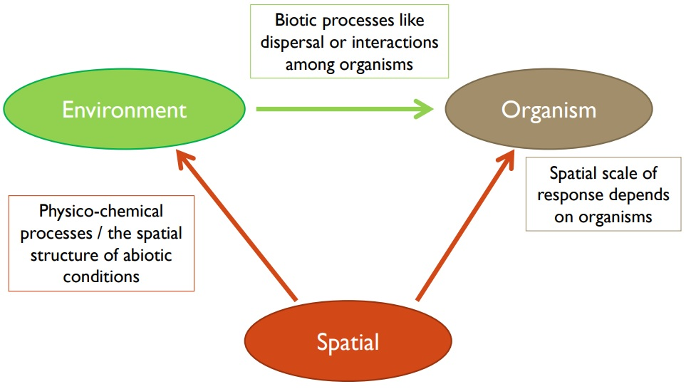
(from P. LeGouar)
Temporal autocorrelation in ecology is important for understanding the processes of reproduction, migration, population dispersal and species responses to seasonal environmental changes.
Example of temporal autocorrelation
An example of temporal autocorrelation in ecology concerns populations of animal or plant species, particularly when studying seasonal variations. Let’s imagine a study of annual fluctuations in the population of migratory birds in a given region. Temporal autocorrelation means that the number of birds observed at a given time of the year is correlated with the number of birds observed at the same time of the previous year.
Suppose the data show positive temporal autocorrelation for a migratory bird species. This would mean that if, for example, in April of the current year, a large number of these birds are observed, it is highly likely that in April of the previous year, a large number of these same birds were also observed. This temporal dependence may be due to seasonal bird migrations, the availability of food resources or other cyclical environmental factors.
2.2. Spatial dependence
Spatial autocorrelation refers to the correlation between observations in close spatial locations. It shows temporal similarities that depend on the scale used. Spatial autocorrelation is important for understanding patterns of species distribution, population dispersal, biotic interactions and ecological processes at different spatial scales.
Spatial autocorrelation can be due to various factors, such as :
Microclimate effects: local characteristics of terrain, vegetation or topography can influence temperature on a small scale,
Dispersion phenomena: the propagation of heat, wind, humidity or other environmental factors can cause spatial autocorrelation,
Biotic interactions: interactions between plant, animal and micro-organism species in an ecosystem can also influence the spatial distribution of variables such as temperature.
Example of spatial dependence
An example of spatial autocorrelation is the observation of temperature distribution in a large forest. Let’s imagine a large, dense forest with many weather stations measuring temperatures at different locations. Spatial autocorrelation would manifest itself in the fact that temperatures recorded at nearby locations in the forest are correlated, i.e. they tend to be similar.
Suppose the data show positive spatial autocorrelation. This would mean that, if you have two weather stations located close to each other (say, a few meters apart), the temperatures measured at these two stations at any given time are highly positively correlated. In other words, when one of the stations records a high temperature, the other station will also tend to record a high temperature, and vice versa.
3. Why is this important?
Autocorrelation is an essential concept in statistics, as it can have a significant impact on data analysis. In the presence of pseudoreplications, meaning that several different values are thought to be taken when in fact they are dependent on each other, it may appear that one variable has a significant effect on another, when in reality this effect is biased due to the temporal or spatial dependence of the data. It can therefore have a significant impact on statistical analysis, and often requires adjustments to ensure that results are reliable and unbiased.
Autocorrelation checking is an essential process in statistics to guarantee the accuracy, reliability and validity of analyses. It enables appropriate statistical methods to be applied, biases to be corrected and informed modeling and forecasting decisions to be made. It is also essential for understanding patterns of variation in biological data.
I. Time dependence
Temporal dependency means that values sampled at a given time can be related to the value sampled before. Therefore, the variable can be correlated to itself and create pseudoreplication.
Diverse packages on R are useful to manage time series, such as TSA (Time Series Analysis).
Attaching package: 'nlme'
The following object is masked from 'package:dplyr':
collapse
Loading required package: carData
Attaching package: 'car'
The following object is masked from 'package:dplyr':
recode
The following object is masked from 'package:purrr':
some
Attaching package: 'TSA'
The following object is masked from 'package:readr':
spec
The following objects are masked from 'package:stats':
acf, arima
The following object is masked from 'package:utils':
tar
1. The dataset
To understand better how to handle time series, data are used to illustrate the process from an experiment on vultures in time.
## Load the datadataT=read.table("vautour.txt",header=T,dec=",", stringsAsFactors = T)head(dataT) # What are the data
col year success growth denstot ratio
1 C 1985 0.5000000 1.2500000 9.00000 0.1432580
2 C 1986 0.5000000 0.6666667 4.00000 0.4604144
3 C 1987 0.8333333 1.3750000 17.00000 0.7876576
4 C 1988 0.5238095 1.2000000 29.00000 0.6261380
5 C 1989 0.5000000 1.1428571 45.00000 0.3209719
6 C 1990 0.5694444 1.1296296 27.33333 0.2768327
summary(dataT) # Summary of the spread of each variable
col year success growth denstot
C:19 Min. :1972 Min. :0.3333 Min. :0.6667 Min. : 4.000
O:27 1st Qu.:1983 1st Qu.:0.5964 1st Qu.:1.0055 1st Qu.: 9.167
Median :1990 Median :0.7197 Median :1.1329 Median :26.833
Mean :1989 Mean :0.7268 Mean :1.1172 Mean :28.023
3rd Qu.:1995 3rd Qu.:0.8735 3rd Qu.:1.1982 3rd Qu.:41.643
Max. :2003 Max. :1.0000 Max. :1.3889 Max. :68.933
ratio
Min. :0.007996
1st Qu.:0.207050
Median :0.420548
Mean :0.464461
3rd Qu.:0.733536
Max. :0.993844
Two colonies ‘C’ and ‘O’ are studied from 1972 to 2003. In particular, the reproductive success (success), the growth rate (growth), the density of population (denstot) and the resource availability (ratio) of the colonies.
## Arrange the datasetdataT_ordered=dataT %>%arrange(col,year)## Create 2 sub-datasets for the 2 coloniesC=dataT[dataT$col=="C",]O=dataT[dataT$col=="O",]
2. Data exploration
## Data representation# Window sizepar(mfrow=c(2,3),mar=c(2,4,2.5,0),oma=c(2,2,2,4)) ## Colony Cplot(C[,2],C[,3], xlab="year", ylab="mean reproductive success")lines(C[,2],C[,3])plot(C[,2],C[,4], pch=17, xlab="year", ylab="Colony growth rate")lines(C[,2],C[,4])plot(C[,2],C[,5],pch=16, xlab="year", ylab="Number of pairs")lines(C[,2],C[,5])mtext(text="Parameter for Colony C",side=3,line=-1,outer=TRUE)## Colony Oplot(O[,2],O[,3], xlab="year", ylab="mean reproductive success")lines(O[,2],O[,3])plot(O[,2],O[,4],pch=17, xlab="year", ylab="Colony growth rate")lines(O[,2],O[,4])plot(O[,2],O[,5], pch=16, xlab="year", ylab="Number of pairs")lines(O[,2],O[,5])mtext(text="Parameter for Colony O",side=1,line=-14.5,outer=TRUE)
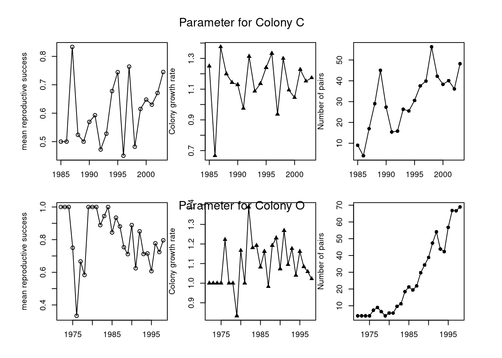
Through time, all the variables do not have the same behaviour for both of the colonies. Some variables fluctuate in time like the O colony growth rate, or can evolve gradually, like the number of pairs for the O colony.
The irregularity in time of the variables can mean that the data are correlated to the precedent ones. A key parameter to know if there really is a correlation of the variable to itself is autocorrelation.
3. Autocorrelation
Autocorrelation is given by the expression: \[\rho(k) = \frac{E(X_tX_{t+1}) - E(X_t)E(X{t+1})}{\sqrt{E(X_t^2)E(X_{t+1}^2)}}\]
With the discrete sequence \(\{X_1, ... X_T\}\) with \(X = \{X_t\}_{t\in\mathbb{N}}\) as \(E[X_t^2] < \infty\) for \(t\in\mathbb{Z}\).
In other words, the values are compared to their neighbors to conclude if they are correlated or not.
The autocorrelation can be detected in a non-stationary process.
Stationnarity is the constistency of the statistical parameters of a series such as the mean and the variance (Figure).
In non-stationary processes, these parameters vary in time.
In stationary processes, the values gravitate around a mean value within the same range.
Stationary and non-stationary processes
Given the precedent plots displayed, one would think there are both stationary and non-stationary processes within the different variables. Tests will allow us to know with more details if there is a dependency.
On R, autocorrelation can be known thanks to the function acf (Auto- and Cross- Covariance and -Correlation Function Estimation) of the TSA package.
Important note: In order for the acf() function to work, the data have to be sorted according to time with one value per time step. To do so, NA or mean values can be added if necessary to fill the dataset accordingly. The package lubridate can be useful to manage dates data.
par(mfrow=c(2,3),mar=c(2,4,4,2))acf(C[,3], main="Reproductive success for C")acf(C[,4], main="Growth rate for C")acf(C[,5], main="Density for C")acf(O[,3], main="Reproductive success for O")acf(O[,4], main="Growth rate for O")acf(O[,5], main="Density for O")
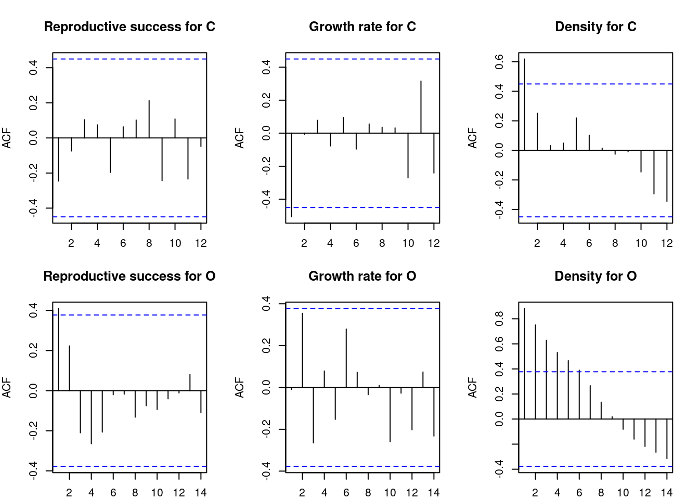
The plots display the correlation coefficient at the associated time step with the neighbors (lag). The blue dotted lines represent the significance threshold of correlation.
These plots allow us to know if the time dependency exists and what profile it follows.
Growth rate of O and reproductive success of C : White noise. There is no significant value and particular pattern. Therefore, no time dependency.
Density of C and reproductive success of O : Short positive dependency. Some values are significantly positively correlated and a pattern emerges (cyclic here).
Growth rate of C : Short negative dependency. Some values are significantly negatively correlated and a pattern emerges (cyclic here).
Density of O : Long term dependency. Several values are significantly correlated and a pattern appears (linear here).
For the following analyses, we will focus on the Density of the O colony. The time is considered an autocovariable.
4. Models
Now that the time dependency have been proved to be true thanks to autocorrelation test, it is possible to proceed with adapted statistical tests.
Different models can be used according to the type of dependency found in the data. The goal will be to apply the model and verify that there is no time dependency left on the residuals.
5. Least square ordinary regression
Least square ordinary regression methods are used during the process of selection of the model.
\[Y = \beta_0 + \beta_1X_1 + \beta_2X_2+...+\beta_nX_n + \epsilon\] - \(Y\) is the dependent variable - \(X_n\) are the explanatory variables - \(\beta_n\) are the coefficients of \(X\) - \(\epsilon\) is the random error term or residuals
To select a relevant model is the same as selecting a model that maximizes likelihood and minimize the number of parameters.
6. Weak time dependency
If the data display a weak time dependency, it is possible to simply add the time as a random variable to the model.
\[Y\sim\alpha.X + time\]
Important note: If the variance of \(Y\) increases beforehand, you will need to perform a logarithmic transformation. If the variance of \(Y\) decreases beforehand, one would use an exponential transformation. Here, the variance increases.
A useful package on R to manage glm and gls is be nlme.
par(mfrow=c(1,2))hist(O$denstot, main =paste("Histogram of total density", "\n" ,"of O colony "), xlab ="Density")hist(log(O$denstot), main =paste("Histogram of total density", "\n" ,"of colony O (log transformation)"), xlab ="Log(Density)")
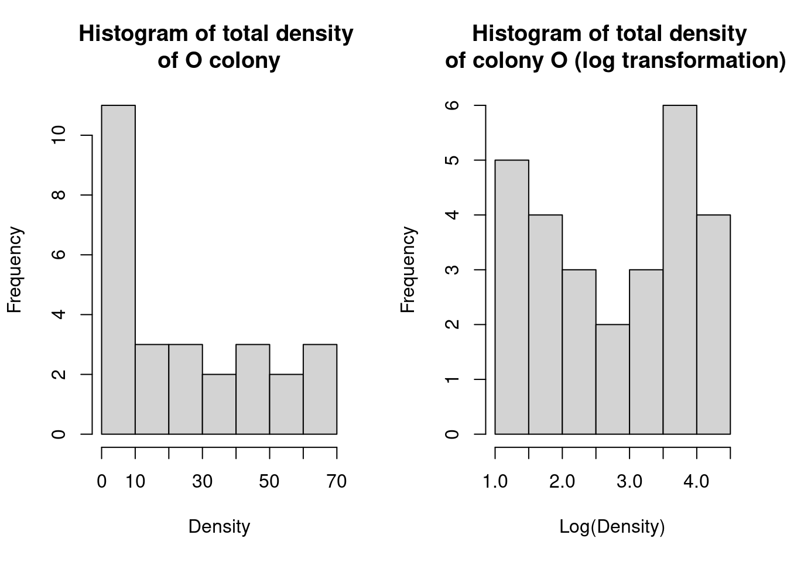
The plots indicates that a log transformation could help better manage the data.
A simple lme model can be used (Linear Mixed-Effects Model) with X = log(total density) and Y the ressource availability.
We can check if the model is satisfactory if the residuals are not significant.
## Model constructionmodlme=lme(log(denstot) ~ ratio, data=O, random=~1|year) ## Residualspar(mfrow=c(1,1))acf(modlme$residuals[,1], main ="Residuals of the lme model")
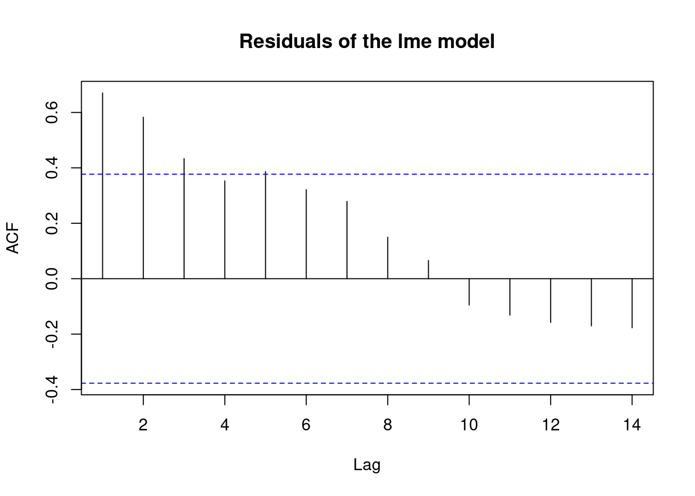
## Residualssummary(modlme)
Linear mixed-effects model fit by REML
Data: O
AIC BIC logLik
81.15956 86.03506 -36.57978
Random effects:
Formula: ~1 | year
(Intercept) Residual
StdDev: 0.896558 0.3362093
Fixed effects: log(denstot) ~ ratio
Value Std.Error DF t-value p-value
(Intercept) 2.177414 0.3189390 25 6.827055 0.0000
ratio 1.345590 0.5560464 25 2.419925 0.0231
Correlation:
(Intr)
ratio -0.816
Standardized Within-Group Residuals:
Min Q1 Med Q3 Max
-0.6631737487 -0.2783018429 -0.0002989742 0.2288493092 0.6403315530
Number of Observations: 27
Number of Groups: 27
The plot shows there is still a time dependency in this kind of model. The correlation value is too strong, the model is not adapted to this case.
7. Medium to strong time dependency
If a medium or a strong time dependency are proven, adding time as a random effect will not be effective enough. It will be necessary to use Time Models.
7.1 Stationary process
To deal with stationary processes, it is possible to use GLS (Generalized Leat Square) models. Three major GLS models can be used.
AR or Autoregressive Model states that a value \(Y_{(t)}\) will depend on the values \(Y\) at \(p\) the precedent times. The model adds a an autoregressive coefficient \(\phi_p\) to each \(Y_{(t-1)}\) value. In summary, this model explains the current value as a linear combination of the precedent values with \(\epsilon_t\) the random component or white noise. \[Y_{(t)}=\mu+\phi_1 \times Y_{(t-1)}+\phi_2 \times Y_{(t-2)} + ...+\phi_q \times Y_{(t-p)}+\epsilon_{(t)}\]
MA or Moving Average model functions in the same way as the AR model. However, it will consider that the current value of a series is the weighted linear combination of the previous \(q\) errors.
ARMA is a combination of AR and MA models and is a linear combination of the \(p\) past values and \(q\) past residual errors.
\[Y_{(t)}=\mu+\phi_1 \times Y_{(t-1)}+\phi_2 \times Y_{(t-2)} + ...+\phi_q \times Y_{(t-p)}+\epsilon_{(t)} + \theta_1 \times \epsilon_{(t-1)}+\theta_2 \times \epsilon_{(t-2)}) + ...+\theta_q \times \epsilon_{(t-q)} \] The gls() function covers the three types of model depending on the correlation structure of the data.
## Model constructionmodgls=gls(log(denstot) ~ year + ratio, data=O, correlation =corAR1(value=0.9,form =~ year))acf(modgls$residuals, main ="Residuals of the gls model")
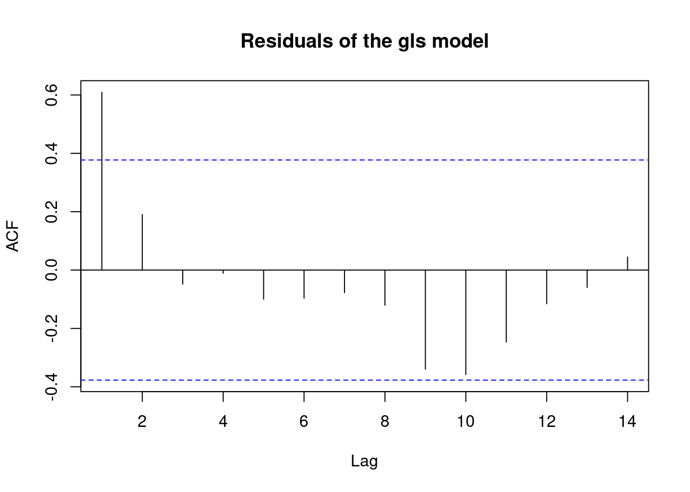
summary(modgls)
Generalized least squares fit by REML
Model: log(denstot) ~ year + ratio
Data: O
AIC BIC logLik
15.67389 21.56415 -2.836943
Correlation Structure: AR(1)
Formula: ~year
Parameter estimate(s):
Phi
0.7161672
Coefficients:
Value Std.Error t-value p-value
(Intercept) -236.27349 30.847312 -7.659451 0.0000
year 0.12045 0.015544 7.748987 0.0000
ratio -0.02149 0.106990 -0.200826 0.8425
Correlation:
(Intr) year
year -1.000
ratio 0.142 -0.143
Standardized residuals:
Min Q1 Med Q3 Max
-2.1682662 -0.4112077 0.1065081 0.7340184 1.0718461
Residual standard error: 0.3264013
Degrees of freedom: 27 total; 24 residual
The autoregressive coefficient Psi is equal to 0.72. The autocorrelation is not completely removed. Still, the variable ‘ratio’ does not have a significant effect on \(Y\) anymore.
We can compare the two previous models thanks to an analysis of their variance (anova).
anova(modgls,modlme)
Warning in nlme::anova.lme(object = modgls, modlme): fitted objects with
different fixed effects. REML comparisons are not meaningful.
Model df AIC BIC logLik Test L.Ratio p-value
modgls 1 5 15.67389 21.56415 -2.83694
modlme 2 4 81.15956 86.03506 -36.57978 1 vs 2 67.48567 <.0001
Anova(modgls)
Analysis of Deviance Table (Type II tests)
Response: log(denstot)
Df Chisq Pr(>Chisq)
year 1 60.0468 9.263e-15 ***
ratio 1 0.0403 0.8408
---
Signif. codes: 0 '***' 0.001 '**' 0.01 '*' 0.05 '.' 0.1 ' ' 1
The second models fits the data better than the first. We can conclude that the autocorrelation made the ratio variable effect wrongly significant.
In order to chose the range of application of the parameters \(p\) and \(q\), it is possible to use a partial correlation function that will display the direct correlation link between the time steps.
par(mfrow=c(1,2))acf(log(O$denstot), main="Density for O")pacf(log(O$denstot), main="Density for O")
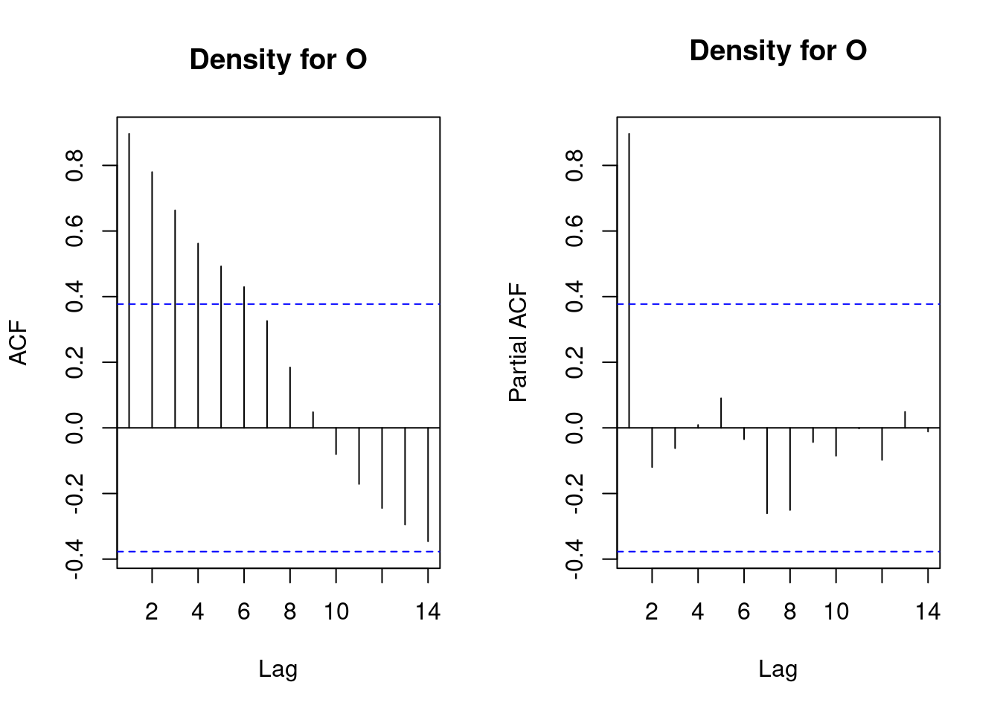
So, the order \(p\) (AR) is generally chosen based on significant lags in the PACF, and the order \(q\) (MA) is generally chosen based on significant lags in the ACF.
7.2 Non-stationary process
To manage non-stationary processes, another model called ARIMA is used. A new parameter \(d\) is introduced with \(p\) and \(q\).
ARIMA(p,d,q) models are a combination of AR models with \(p\), MA models with \(q\), and finally includes difference of order \(d\).
This difference helps make the series stationary by subtracting from the current value the values from the previous \(d\) time points.
In general, we will choose an order \(d=1\) when the series shows a constant trend, and an order \(d=2\) when the series shows a fluctuating trend.
On R, ARIMA models can be used with the function arima(). The argument ’order’contains the values of \(p\), \(d\) and \(q\), in that order.
Different values of these parameters can be tested to find the best model with the AIC criteria displayed in the results. \(d\) must always be equal to 1.
The ARIMA function can help make predictions.
prediction: now we will use this statistical model to make prediction under a specific scenario
scenario: constant and maximum availability in resource (ratio=1) during 20 years
pred=predict(arima1, n.ahead =20,newxreg)par(mfrow=c(1,1))obspred=rbind (data.frame(denstot=O$denstot), data.frame(denstot=exp(predict(arima1, n.ahead =20,newxreg)$pred)))plot(obspred$denstot, main ="Prediction on a 20 years scenario", ylab ="Predicted observations for the total density of O")lines(obspred$denstot)
8. To go further
The ARIMAX model, which stands for AutoRegressive Integrated Moving Average with eXogenous inputs, is an extension of the ARIMA model that incorporates additional exogenous (external) variables. The ARIMAX model is particularly useful when there are external factors that can influence the time series to model.
The eXogenous (X) Inputs are additional external variables that are not part of the time series being modeled but may influence it. These variables are included in the model to capture their impact on the dependent variable.
The ARIMAX model allows to account for the influence of external factors when modeling time series data, making it more flexible and potentially improving the accuracy of predictions.
II. Spatial dependance
Spatial relationships are multidirectional and multilateral. They are distinct, in this sense, from temporal relationships, which allow only sequential relationships along the past-present-future axis.
These are the steps that will be followed here :
Define connection criteria: We establish criteria for connections, determining that point A is connected to point B, which in turn is connected to point C, and so forth. This linkage needs to be translated into a numerical value, providing a quantitative measure of connectivity.
Transform information into numerical value: The established connection criteria are converted into numerical values, creating a quantifiable representation of the relationships between points. This numerical transformation is crucial for subsequent analyses.
Calculate autocorrelation coefficient: Utilizing the numerical values derived from the connection criteria, we compute an autocorrelation coefficient. This statistical measure helps quantify the degree of spatial autocorrelation, providing insights into the patterns of similarity or dissimilarity among neighbouring points.
Integrating spatial autocorrelation into analyses: Upon detecting spatial autocorrelation, the next step involves seamlessly integrating this information into our analytical processes. This will be discussed later in this chapter.
1 - Codifying the neighbour structure
1.1 Defining neighbours
1.1.1 Characteristics of the relationships between spatial objects
Consider a surface ℜ. This surface can be divided into n mutually exclusive zones. Two adjacent zones are separated by a common boundary.
Mathematical definition of spatial relationships
Spatial relationships \(B\) are a subset of the Cartesian product \(ℝ²× ℝ² = {(i, j) : i ∈ ℝ ², j ∈ ℝ²}\) of couples \((i, j)\) of spatial objects, i.e. all couples \((i, j)\) such that \(i\) and \(j\) are both spatial objects identified by their geographical coordinates, and such that \((i, j)\) is different from \((j,i)\). A spatial object cannot be linked to itself: \((i,i) ⊈ B\). Moreover, if \((i, j) ⊆ B\) and \((j,i) ⊆ B\) for all couples of spatial objects, the spatial relationships are said to be symmetrical (Tiefelsdorf, 1998).
Figure 2.1 illustrates the codifying process of spatial relationships. This approach makes it possible to systematically transcribe the complexity of geographic space into a final set of data analyzable by a computer.
First, the study zone is divided into mutually exclusive areas. Each area contains a reference point (often its centroid). Then, the spatial relationships can be specified by a neighbourhood graph connecting the areas considered to be neighbouring, or by a matrix containing the geographical coordinates of the reference points. The third step consists in coding the graph in a neighbourhood matrix, or transforming the geographic coordinates into a distance matrix.
The neighborhood matrix measures the similarity between observations. A value greater than zero indicates that the observations are considered neighbors. For example, in the case of the binary matrix shown in figure 1 :
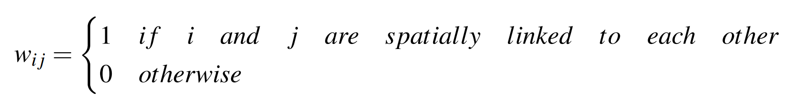
Conversely, the distance matrix measures dissimilarity between zones. The higher \(d_{ij}\) , the more different the zones. With, if an Euclidian distance is used : \(d_{ij}=\sqrt{(x_i-x_j )^2+(y_i-y_j )²}\), \(α\) and \(β\) being the geographical coordinates of the observations. The spatial dependence structure may not be geographical. Any relevant dual relationship may be used to define a neighbourhood graph. For instance:
Genetic proximity between families
Cultural exchanges
Migratory flows
1.1.2 The “list of neighbours” object in R
Package spdep makes it possible to define the relationships between spatial objects. In R, the class of an object defines all its properties and how the statistician can use it. Neighbourhood relationships are recorded in an object of class nb. Assume n spatial observations and neighbours_nb the spatial object containing the associated neighbourhood relationships. neighbours_nb is a list of length n. Each element [i] of the list contains a vector with the index of the neighbours of the item indexed i. If [i] does not have neighbours, the list contains only 0. The list also contains a vector of characters corresponding to the attributes of each neighbourhood zone, as well as a logical value indicating whether the relationship is symmetrical. The main information about the object neighbours_nb can be derived using the function: summary(neighbours_nb)
Let’s load a few packages useful for analysis :
# Spatial series analysis : packages#Libraries for spatial series analyseslibrary(spdep) #to extracted the neighbors is a spatial data
Loading required package: spData
To access larger datasets in this package, install the spDataLarge
package with: `install.packages('spDataLarge',
repos='https://nowosad.github.io/drat/', type='source')`
Loading required package: sf
Linking to GEOS 3.10.2, GDAL 3.4.1, PROJ 8.2.1; sf_use_s2() is TRUE
Attaching package: 'spdep'
The following object is masked from 'package:ade4':
mstree
library(ade4) #used for plotting spatial datalibrary(spatialreg) #used for spatial data modelling
Loading required package: Matrix
Attaching package: 'Matrix'
The following objects are masked from 'package:tidyr':
expand, pack, unpack
Attaching package: 'spatialreg'
The following objects are masked from 'package:spdep':
get.ClusterOption, get.coresOption, get.mcOption,
get.VerboseOption, get.ZeroPolicyOption, set.ClusterOption,
set.coresOption, set.mcOption, set.VerboseOption,
set.ZeroPolicyOption
library(gwrr) #to run geographically weighted regression
Loading required package: fields
Loading required package: spam
Spam version 2.10-0 (2023-10-23) is loaded.
Type 'help( Spam)' or 'demo( spam)' for a short introduction
and overview of this package.
Help for individual functions is also obtained by adding the
suffix '.spam' to the function name, e.g. 'help( chol.spam)'.
Attaching package: 'spam'
The following object is masked from 'package:Matrix':
det
The following objects are masked from 'package:base':
backsolve, forwardsolve
Loading required package: viridisLite
Try help(fields) to get started.
Loading required package: lars
Loaded lars 1.3
#these two libraries (spdep and ade4 also provive function that make object compatibles between library)
Let’s then begin the analysis of a first dataset dealing with richness of birds from agricultural habitats and of plant species from permanent pastures at the scale of Ille-et-Vilaine, “div35”.
#Spatial series analysis : dataset div35#For a REGULAR configuration of points # 0 - Exploring the dataset #Investigate the data set of plant and bird richness at the scale of Ille-et-Vilaine#Import datasetdiv35=read.table("div35.txt", header=T, dec=",")#Summarysummary(div35)
rich_pp rich_ois x y
Min. :14.00 Min. :13.00 Min. :555000 Min. :5285000
1st Qu.:23.00 1st Qu.:32.00 1st Qu.:575000 1st Qu.:5315000
Median :25.00 Median :34.00 Median :595000 Median :5335000
Mean :24.51 Mean :33.74 Mean :593971 Mean :5336029
3rd Qu.:26.00 3rd Qu.:37.00 3rd Qu.:615000 3rd Qu.:5355000
Max. :29.00 Max. :41.00 Max. :635000 Max. :5385000
#Plot the spatial distribution of the pointspar(mfrow=c(1,1))plot(div35[,3:4])
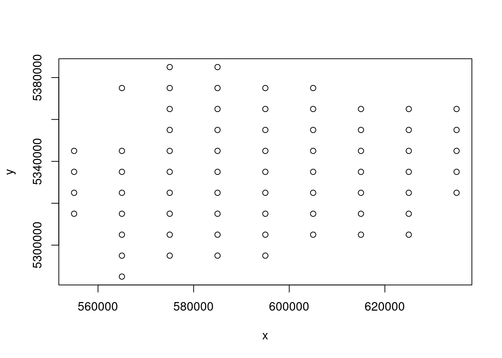
#This is a map of Ille-et-Vilaine department.#We can point St-Malo in the North and Rennes in the center for of the map, for example.#The spatial configuration of the points is regular.
Let’s also start the analysis of second dataset dealing with chemical measures in a set of ponds, “mares”.
#Spatial series analysis : dataset mares#For an IRREGULAR configuration of points# 0 - Exploring the data set #The data set is issued from a study that analysed several physico-chemical properties of several ponds. each pond is geolocalised#Import the datasetmare=read.table("mares.txt",header=TRUE)#Summarysummary(mare)
pH Conductivity Carbonate hardness
Min. :7.800 Min. : 59.0 Min. : 40.0 Min. : 65.0
1st Qu.:7.900 1st Qu.:196.5 1st Qu.:145.0 1st Qu.:167.5
Median :7.900 Median :341.0 Median :160.0 Median :185.0
Mean :7.935 Mean :310.1 Mean :148.9 Mean :179.4
3rd Qu.:8.000 3rd Qu.:405.0 3rd Qu.:175.0 3rd Qu.:202.5
Max. :8.200 Max. :560.0 Max. :200.0 Max. :275.0
Bicarbonate Chloride Suspens Organic
Min. : 90.0 Min. : 5.00 Min. : 0.200 Min. :0.3700
1st Qu.:150.0 1st Qu.:10.00 1st Qu.: 1.700 1st Qu.:0.4700
Median :165.0 Median :12.50 Median : 2.400 Median :0.5500
Mean :158.7 Mean :15.06 Mean : 3.968 Mean :0.5632
3rd Qu.:167.5 3rd Qu.:17.50 3rd Qu.: 4.500 3rd Qu.:0.6200
Max. :190.0 Max. :32.50 Max. :19.000 Max. :1.0000
Nitrate Ammonia x y
Min. :0.22 Min. :0.00000 Min. : 55.00 Min. : 17.0
1st Qu.:0.70 1st Qu.:0.00000 1st Qu.: 78.00 1st Qu.: 88.0
Median :1.48 Median :0.01000 Median : 92.00 Median :148.0
Mean :1.48 Mean :0.02935 Mean : 96.94 Mean :162.1
3rd Qu.:2.05 3rd Qu.:0.03000 3rd Qu.:112.50 3rd Qu.:232.0
Max. :5.52 Max. :0.38000 Max. :163.00 Max. :317.0
row.names(mare)<-seq(1,31,1) #we name the ponds from 1 to 31.#We can plot the ponds on a map according to their coordinates#We can see that the configuration of the ponds is not regular over spacepar(mfrow=c(1,1))plot(mare$x,mare$y)
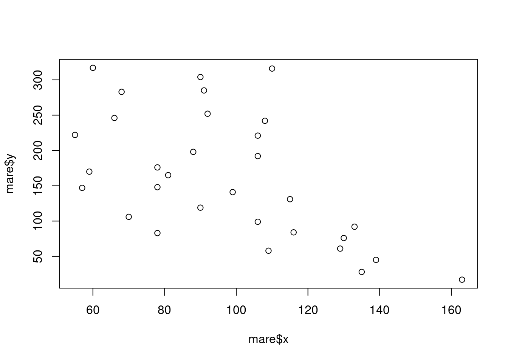
1.2 Connection among neighbours
In order to identify points in close proximity, it is imperative to establish specific criteria beyond merely considering distance along the x-axis. This approach will enable us to clearly define the parameters that determine proximity between points in our analysis.
1.2.1 Neighbourhood criterion
a) Defining neighbours based on distance
Once we have a set of points spread across the territory, we can calculate the distance between them. These points may be specific locations where the information has been observed, or points representative of each zone, for example their centroid. In this case, the underlying assumption is that the distribution of the variable within each zone is sufficiently homogeneous to approximate it to a single point.
Neighbourhood graphs materialise the links between the various entities. They are defined in such a way that they represent the underlying spatial structure as closely as possible. There exists many different types of neighbourhood graphs.
a.1) Neighbourhood graphs based on geometric concepts :
• Delaunay’s Triangulation Delaunay’s Triangulation is a geometric method that connects points into triangles such that the minimum angle of all triangles is maximised.
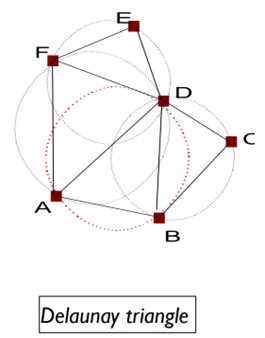
Figure 2.2 : Delaunay triangle (source : Pascaline Le Gouar)
• Sphere-of-influence based graph
The sphere-of-influence based graph links two points if their “circles from the nearest neighbour” overlap. The “circle of the nearest neighbour” of point \(P\) is the largest circle centred in \(P\) and that contains no other points than \(P\). All points in the study set are not necessarily interconnected.
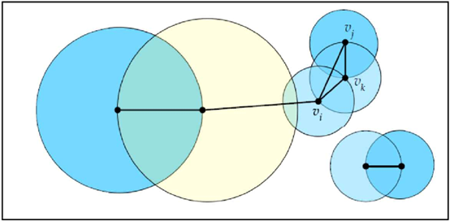
Figure 2.3 : The sphere of influence graph (edges) of a set of points, showing their nearest neighbour circles (source : Toussaint & Emirates, 2014)
• Gabriel’s graph
Gabriel’s graph links two points \(p_i\) and \(p_j\) if and only if all other points are outside the circle with diameter \([p_i, p_j]\).
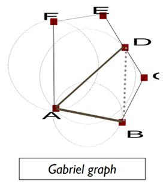
Figure 2.4 : Gabriel graph (source : Pascaline Le Gouar)
• Graph of relative neighbours
The graph of relative neighbours considers that two points \(pi\) and \(pj\) are neighbours if \[d(p_i,p_j) ≤ max [d(p_i,p_k),d(p_j,p_k)] \,\,\,\,\,\,∀k = 1,..., n k\ne i,j\] with \(d(p_i, p_j)\) the distance between \(p_i\) and \(p_j\).
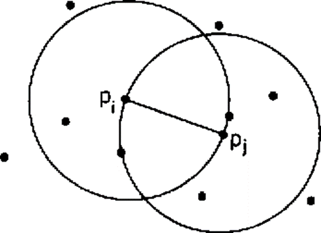
Figure 2.5 : Graph of relative neighbours (source : J. O’Rourke, 1982)
For example, here’s the application of these geometric concepts to Parisian districts :
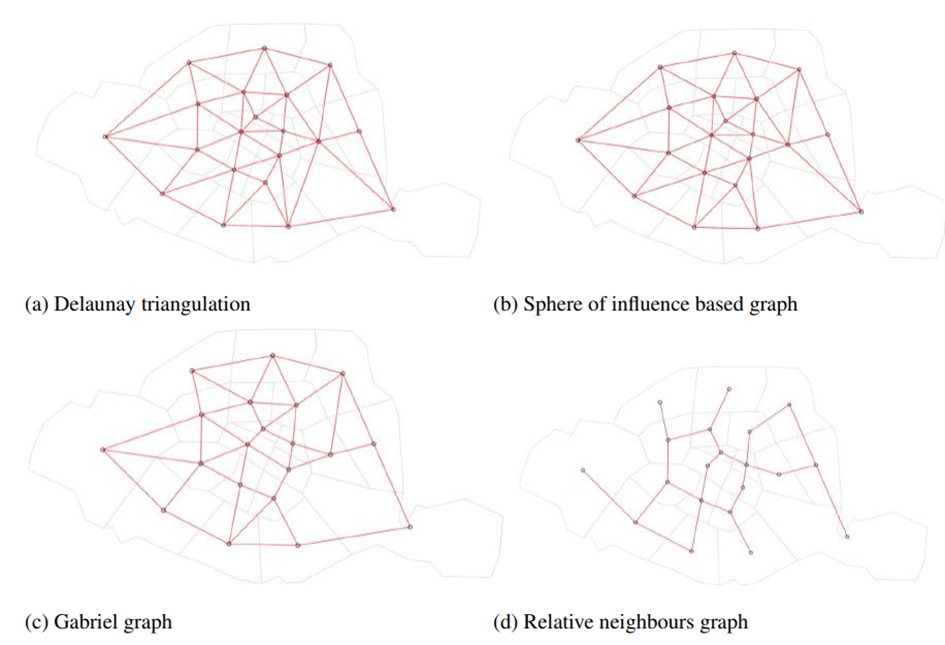
Figure 2.6 : Four neighbourhood graphs of Parisian districts based on geometric concepts
Application in R :
Coming back to our “mares” dataset, we can explore these geometric concepts :
#Spatial series analysis : dataset "mares"#Connexions among neighbours#For an IRREGULAR configuration of points#Several criteria exist to connect points that are irregularly distributed.# It is necessary to tests several criteria to test different hypothesis and different scale of the phenomena.#Criteria are determined when we have an a priori idea of the processes involved.#For example, may be due to eutrophication (lots of nutrients added, lots of organisms making excrements), heterogeneity in the pond - pond animal and plant communities may have an influence#Two ponds should look alike because they're on the same soil#Animals and plants: depending on the dispersal abilities of these species, will influence a pattern in water quality.#Ponds supposed to be in a specific landscape will look alike.#Larger-scale phenomena (flooding): if ponds are distributed in a valley, all the ponds will be homogenized.# 1 - Examine the connection between points ====================# for first step extract the coordinatemarexy=mare[,11:12]# A - The gabriel graph method ---------------------------#Note that for this function, the coordinates should be in a matrix:mare.gab<-gabrielneigh(as.matrix(marexy))# We can represent it spatially with this function:s.label(marexy,clabel=.5, cpoint=.1,neig=nb2neig(graph2nb(mare.gab)))
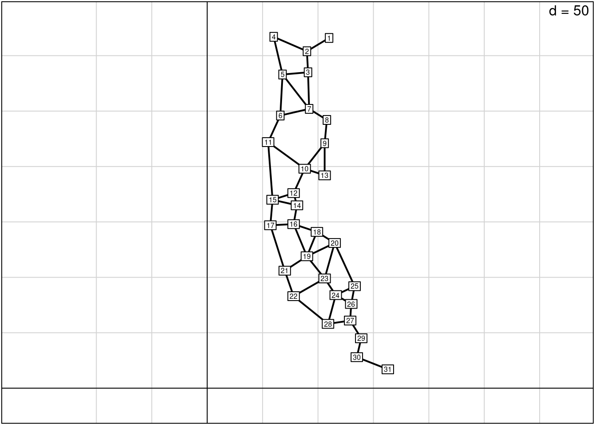
# the part nb2neig(graph2nb(mare.gab)) is necessary to translate the object from one package to another # s.label is a function from ade4 and we need to translate our object from tripack->spdep->ade4# if we want a synthetic view of the neighbor relationship we can use this function:graph2nb(mare.gab)
Neighbour list object:
Number of regions: 31
Number of nonzero links: 47
Percentage nonzero weights: 4.890739
Average number of links: 1.516129
3 regions with no links:
13 28 31
Non-symmetric neighbours list
#31 pools, 47 links, each point will have an average of 1.5 neighbors, 3 regions have no links (31, 13, 28) = considered as non-neighborsgab=graph2nb(mare.gab)#note: the ponds 13, 28 and 31 seems to have no link. This is just because they do not appear#in the $from object but only in the $to (this is a bug in the function - we would assume)# B - The Delaunay triangulation graph method -----------#to compute a neighbor relationship using the delaunay triangulation method #We should use this function using directly the coordinates:mare.tri<-tri2nb(marexy)
Warning in sn2listw(df1): style is M (missing); style should be set to a valid
value
Neighbour list object:
Number of regions: 31
Number of nonzero links: 164
Percentage nonzero weights: 17.06556
Average number of links: 5.290323
#With this connection criterion, ponds have an average of 5.2 neighbors: more connections are created
a.2) Neighbourhood graphs based on nearest neighbours
A second method consists in selecting the k closest points as neighbours. This method has the advantage that it leaves no point without a neighbour, which is not required when conducting a spatial analysis, but generally offers a better reflection of reality. The choice can also be made to keep only the points located at a certain distance.
For example :
Nearest neighbour
Two nearest neighbour
Three nearest neighbour
Neighbours at a minimum distance
etc.
Still using the example of Parisian districts, here’s the nearest neighbour application:
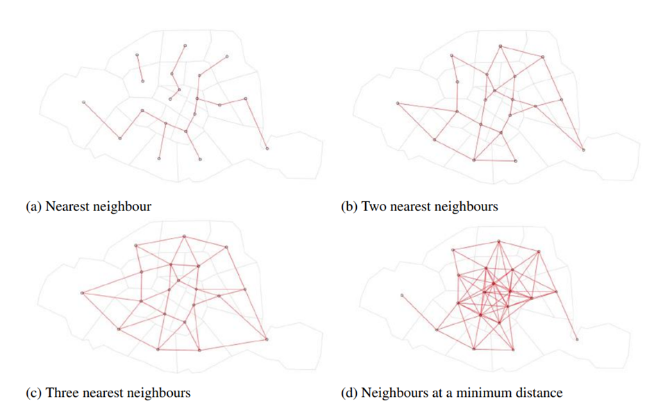
Figure 2.7 : Four graphs based on the nearest neighbours of Parisian districts
The nbdists function of R can be used to calculate the vector of distances between neighbours. It makes it possible to determine the minimum distance \(d_{min}\) above which all points have at least one neighbour, then the dnearneighb function allows to keep as neighbours only the points between distances \(0\) and \(d_{min}\).
Application in R
Let’s see what it looks like with the “mares” dataset with the criterion of neighbours at a minimum distance (30 km) :
#Spatial series analysis : dataset "mares"#Connexions among neighbours#For an IRREGULAR configuration of points# 1 - Examine the connection between points ====================# for first step extract the coordinate marexy=mare[,11:12]# C - The neighbours at a minimum distance criterion --------------------------# to compute a neighbor relationship using a distance criteria we should use this function using directly the coordinates as a matrix and indicating the min and max of distance.# the max of distance is defined depending on our knowledge of the system or for different hypothesis we want to test:mare.dnear<-dnearneigh(as.matrix(marexy),0,30) #here we specify that ponds are connected if they are appart from less than 30m# Graphic representation:s.label(marexy,clabel=0.6, cpoint=1,neig=nb2neig(mare.dnear))
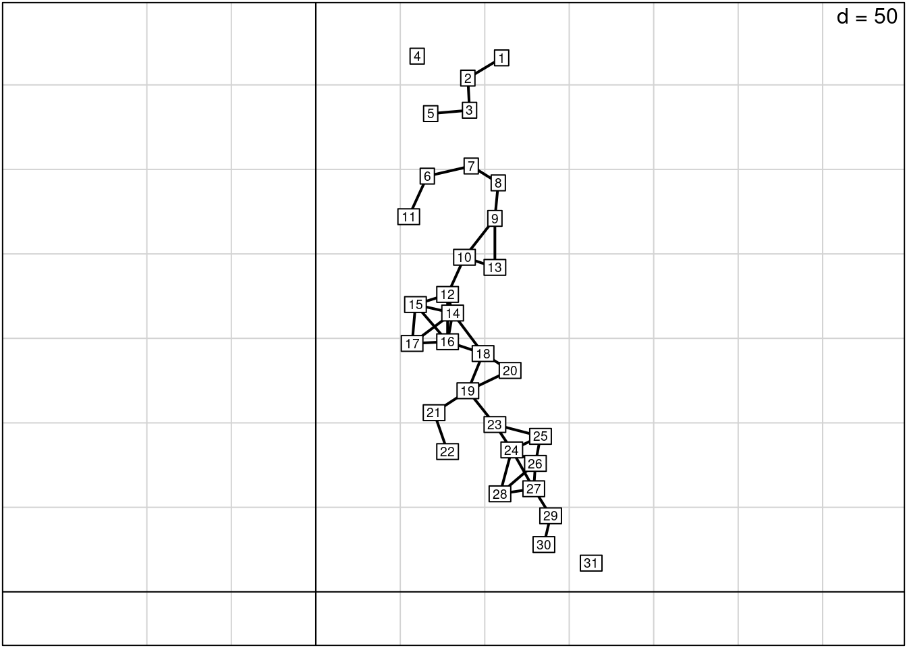
# Synthetic view:mare.dnear #in that specific case: the ponds 4 and 31 are not connected to any other pond
Neighbour list object:
Number of regions: 31
Number of nonzero links: 80
Percentage nonzero weights: 8.324662
Average number of links: 2.580645
2 regions with no links:
4 31
4 disjoint connected subgraphs
Let’s then compare the current criterions in the mares dataset:
#Spatial series analysis : dataset "mares"#Connexions among neighbours#For an IRREGULAR configuration of pointspar(mfrow=c(1,3))s.label(marexy,clabel=.5, cpoint=.1,neig=nb2neig(graph2nb(mare.gab))) #Gabriels.label(marexy,clabel=0.6,cpoint=1,neig=nb2neig(mare.tri)) #Triangulations.label(marexy,clabel=0.6, cpoint=1,neig=nb2neig(mare.dnear)) #Neighbour at a min distance
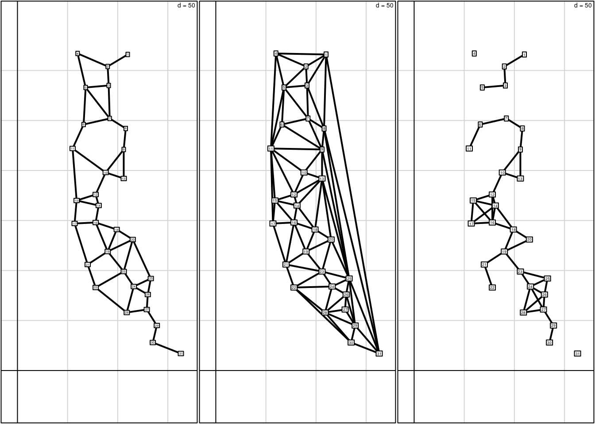
#When comparing gabriel, triangulation and distance results, we observe different connexions.#We can think of several biological processes according to the different critera :#Gabriel: we can imagine gradients in relation to the ground - we can also imagine a small hydro network that connects the two.#Triangular: Flooding in a valley would make a connection on a larger scale#Neighbour at a min distance: composition of plant and animal communities, dispersion
b) Defining neighbours based on contiguity
When the areal data consist in a partition of the entire territory, the concept of “distance between observations” can become quite ambiguous. The example below illustrates the limits of using the distance between centroids to define the notion of neighbourhood.
Example - Ambiguity of the notion of distance between centroids
Let \(R_1\), \(R_2\), \(R_3\) be three distinct zones. It can be considered that since \(R_2\) and \(R_3\) are separated in space, but both are adjacent to \(R_1\), they are both closer to \(R_1\) than to one another. However, the centroids in these zones are equidistant from each other (see Figure 2.8). Summarising the proximity between zones by the distance between the centroids results in a partial loss of the richness of the spatial relationships.
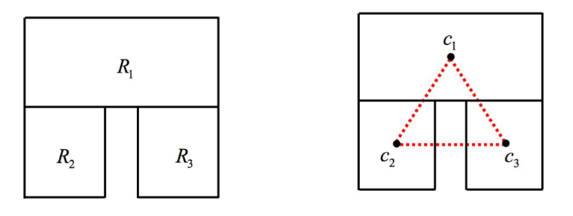
Figure2.8 - Left: three zones - Right: distance between centroids (Source: Smith, 2016)
Types of contiguity :
Rook contiguity
In the sense of Rook contiguity, neighbours have at least two common boundary points (a segment). This matches the movement of the Rook in chess.
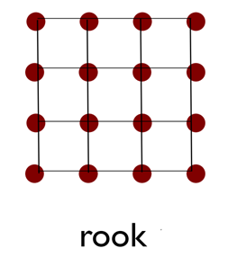
Figure 2.9 : Rook configuration (source : Pascaline Le Gouar)
Queen contiguity
For two zones to be adjacent in the sense of Queen contiguity, they only need to share one common boundary point. This matches the movement of the Queen in chess.
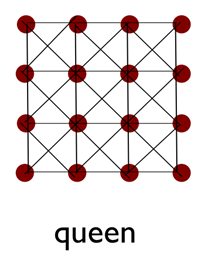
Figure 2.10 : Queen configuration (source : Pascaline Le Gouar)
Bishop contiguity
In the sense of bishop contiguity, two regions are considered as spatial neighbors if they meet at one point ;it is based on the existence of common vertices between two spatial units. This matches the movement of the Bishop in chess.
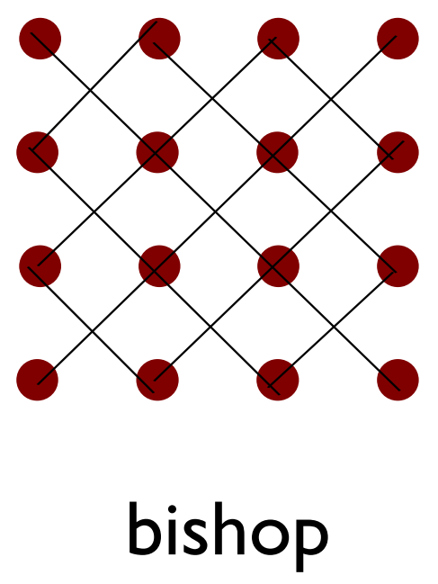
Figure 2.11 : Bishop configuration
Still using the example of Paris districts, here’s an example of how continuity can be applied:
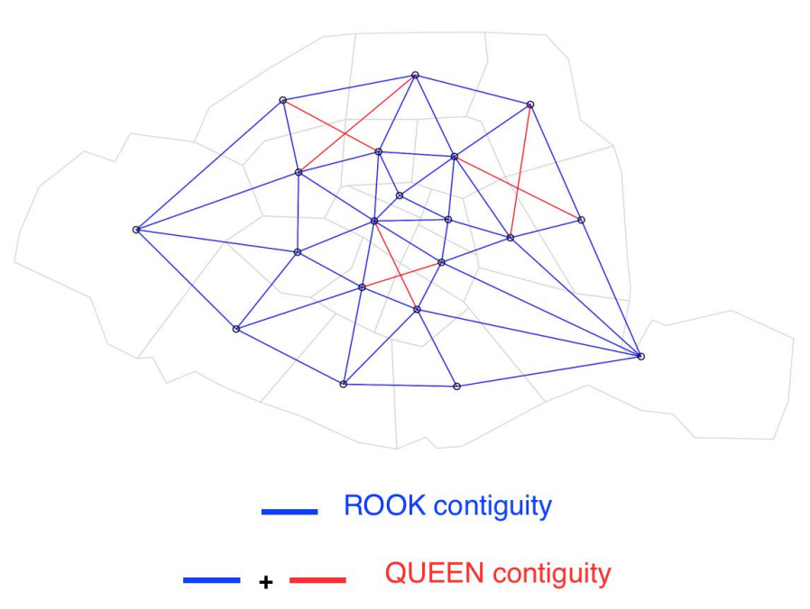
Figure 2.12 : Queen and Rook contiguity in Paris districts
Application in R
We can return to the first dataset to investigate the configuration of the points :
#Spatial series analysis : dataset div35#Connexion between points#For a REGULAR configuration of points# 1 - Examine the connection between points ====================# To investigate the various criteria of connection between points we need to# extract the coordinates in a separate objectxy=div35[,3:4]# A - If we choose that points are connected to their 4th nearest neighbors (the "rook connection") ----div.knear4<-knearneigh(as.matrix(xy),4) #to extract the neighbour pointsdiv.knear4
knn2nb(div.knear4) #knn2nb convert the object returned by the function knearneigh to a class nb (necessary for the subsequent function)
Neighbour list object:
Number of regions: 68
Number of nonzero links: 272
Percentage nonzero weights: 5.882353
Average number of links: 4
Non-symmetric neighbours list
# The information printed corresponds to all the links that have been created compared to all those that could have been created (272)knn2nb(div.knear4) # transformation to get as many lists than points/observation
Neighbour list object:
Number of regions: 68
Number of nonzero links: 272
Percentage nonzero weights: 5.882353
Average number of links: 4
Non-symmetric neighbours list
plot.new()plot(knn2nb(div.knear4), xy, add=TRUE)
# B - If we specify a queen type of connection with points connected to their 8th nearest neighbors (the "queen connection") ----div.knear8<-knearneigh(as.matrix(xy),8)div.knear8
Neighbour list object:
Number of regions: 68
Number of nonzero links: 544
Percentage nonzero weights: 11.76471
Average number of links: 8
Non-symmetric neighbours list
# Plotting the connection between points for each criterion## MPE this in an intercative command, can not be used with a markodon document.par(mfrow=c(1,2))ade4::s.label(xy, ylim=c(min(div35[,4])-10000,max(div35[,4])+10000), xlim=c(min(div35[,3])-10000,max(div35[,3])+10000), clabel=0.6, cpoint=1,neig=nb2neig(knn2nb(div.knear4)))ade4::s.label(xy, ylim=c(min(div35[,4])-10000,max(div35[,4])+10000), xlim=c(min(div35[,3])-10000,max(div35[,3])+10000), clabel=0.4, cpoint=1,neig=nb2neig(knn2nb(div.knear8)))
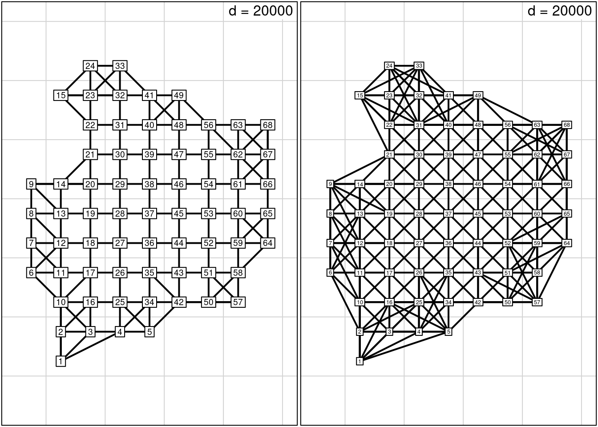
#Be careful, the distance between points is not always 10km !par(mfrow=c(1,1))
c) Defining neighbours based on the optimisation of a trajectory
Some methods such as spatial sampling require prior data sorting. When the latter are characterised by two variables (i.e. their geographical coordinates in the plan), how to choose a sorting method becomes a complex theoretical problem.
One solution consists in running a path along all the points, and sorting them by their order of appearance when the path is taken. The neighbours of a given point are then the points located just before or just after along the path. Out of the set of possible paths, some have characteristics that are better suited to the desired objectives, such as, for instance, reducing sampling variance.
Shortest path (Hamilton path)
This is the case of the shortest path. It minimises the sum of the distances between two consecutive points. This path, which does not set any particular constraints on the starting or arrival point, is known in the literature as the Hamilton path (Figure 2.13b).
Hamiltonian cycle
A particular and well-known case of shortest path is that of the travelling salesman. It represents the path which a travelling salesman must take to visit all his customers, minimising the distance travelled and managing to return home in the evenings. Such a path corresponds to a Hamiltonian cycle (Figure 2.13c).
The TSP package in R allows to compute this thanks to the function insert-dummy and the concorde program.
General randomized tessellation stratified method (GRTS)
The general randomized tessellation stratified method (GRTS, Stevens Jr et al. 2004) is popular in spatial sampling, as it makes it possible to get a spatially-balanced sample for a finite population of individuals (distinct and identifiable units of dimension 0 of a discrete population, e.g. trees in a forest), a linear population (continuous units of dimension 1, e.g. rivers) or a population of surfaces (continuous units of dimension 2, e.g. forests).
The idea of the method is to project the coordinates on a unit square, then cut this square into four cells, each of which is cut again into four sub-cells, etc. To each cell, a value is assigned, resulting from the order in which the division was carried out, ultimately making it possible for the units to be placed on the path going through the two-dimensional space.
This method can be implemented with package spsurvey in R (Kincaid et al. 2016). However, with the GRTS method, large jumps (Figures 2.13d) are created along the paths, which can affect the accuracy of the estimates.
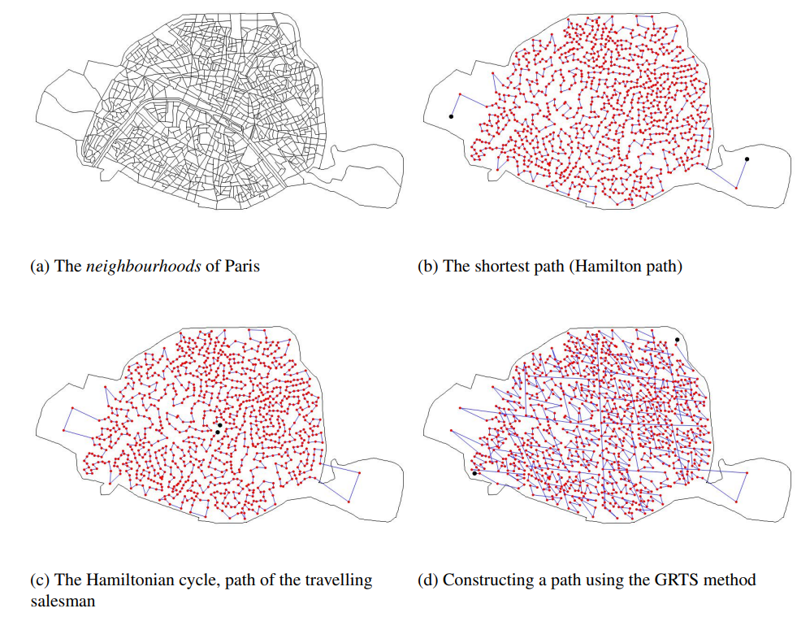
Figure 2.13 : Looking for paths that cross through all the neighbourhoods of Paris
1.3 Neighborhood weights
1.3.1 From a list of neighbours to a weight matrix
Once the neighbourhood graph has been defined and codified into a list of neighbours, the link between points \(i\) and \(j\) is transformed into the element \(w_{ij}\) of the weight matrix \(W\). The weight matrix \(W\) is the “formal expression of spatial dependency between observations” (Anselin et al. 1988)
Formally, the weights express the neighbor structure between the observations as a \(n\times n\) matrix \(W\) in which the elements \(w_{ij}\) of the matrix are the spatial weights:
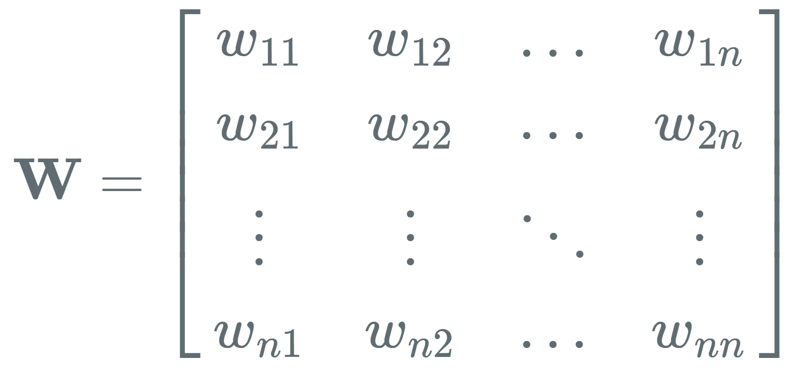
Defining the weight matrix
Most commonly, the weight matrix is a binary contiguity matrix (see Figure 2.13):
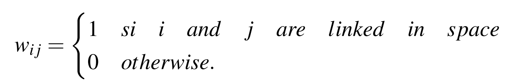
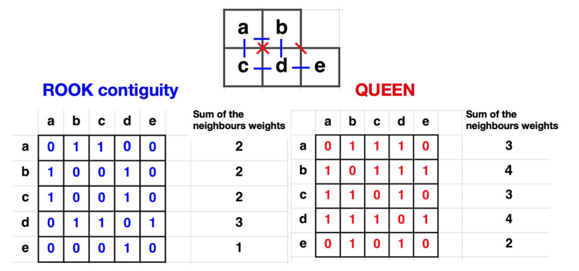
Figure 2.14 : Binary weight matrix
The weight matrices can also take into account the distance between the geographical zones, as relationships becoming smaller with distance: \(1\) if \(d < d_0 - 0\) otherwise, \(\frac{1}{d^α}\) , or \(e^{−αd}\) with \(α\) an estimated or predetermined parameter. Using a maximum distance beyond which \(w_{ij} = 0\) makes it possible to limit the number of components with a value different from zero. When the size of the zones is heterogeneous, this method increases the risk of a considerable variability in the number of neighbours.
Lastly, certain matrices take the strength of relations between the zones into account. For example, weight can be defined by \(\frac{b^α_{ij}}{d^β_{ij}}\) with \(b_{ij}\) a measure of the strength of relationships between zones \(i\) and \(j\) (which is not necessarily symmetrical), such as the percentage of common boundaries, the total population, the wealth and \(d_{ij}\) the distance between the zones.
Application in R
Let’s go back to our previous data set, div35, to see the transformation into a binary matrix :
::: {.cell}
```{.r .cell-code}
#Spatial series analysis : dataset div35
#Weight matrix
#For a REGULAR configuration of points
# about the code :
# nb2neig(knn2nb()) transform the matrix to subsequently use it is ade4
# neig = define the connection matrix between points
# Transform the list of the names of the neighbors to a 2 by 2 matrix of neighboors with "0" and "1" -----
w2<-knn2nb(div.knear4)
str(w2) # we have as much list as points
```
::: {.cell-output .cell-output-stdout}
```
List of 68
$ : int [1:4] 2 3 4 10
$ : int [1:4] 1 3 10 16
$ : int [1:4] 2 4 10 16
$ : int [1:4] 3 5 25 34
$ : int [1:4] 4 25 34 42
$ : int [1:4] 7 10 11 12
$ : int [1:4] 6 8 11 12
$ : int [1:4] 7 9 12 13
$ : int [1:4] 8 13 14 20
$ : int [1:4] 2 11 16 17
$ : int [1:4] 6 10 12 17
$ : int [1:4] 7 11 13 18
$ : int [1:4] 8 12 14 19
$ : int [1:4] 9 13 20 21
$ : int [1:4] 22 23 24 32
$ : int [1:4] 3 10 17 25
$ : int [1:4] 11 16 18 26
$ : int [1:4] 12 17 19 27
$ : int [1:4] 13 18 20 28
$ : int [1:4] 14 19 21 29
$ : int [1:4] 14 20 22 30
$ : int [1:4] 15 21 23 31
$ : int [1:4] 15 22 24 32
$ : int [1:4] 15 23 32 33
$ : int [1:4] 4 16 26 34
$ : int [1:4] 17 25 27 35
$ : int [1:4] 18 26 28 36
$ : int [1:4] 19 27 29 37
$ : int [1:4] 20 28 30 38
$ : int [1:4] 21 29 31 39
$ : int [1:4] 22 30 32 40
$ : int [1:4] 23 31 33 41
$ : int [1:4] 23 24 32 41
$ : int [1:4] 5 25 35 42
$ : int [1:4] 26 34 36 43
$ : int [1:4] 27 35 37 44
$ : int [1:4] 28 36 38 45
$ : int [1:4] 29 37 39 46
$ : int [1:4] 30 38 40 47
$ : int [1:4] 31 39 41 48
$ : int [1:4] 32 40 48 49
$ : int [1:4] 34 35 43 50
$ : int [1:4] 35 42 44 51
$ : int [1:4] 36 43 45 52
$ : int [1:4] 37 44 46 53
$ : int [1:4] 38 45 47 54
$ : int [1:4] 39 46 48 55
$ : int [1:4] 40 47 49 56
$ : int [1:4] 40 41 48 56
$ : int [1:4] 42 51 57 58
$ : int [1:4] 43 50 52 58
$ : int [1:4] 44 51 53 59
$ : int [1:4] 45 52 54 60
$ : int [1:4] 46 53 55 61
$ : int [1:4] 47 54 56 62
$ : int [1:4] 48 55 62 63
$ : int [1:4] 42 50 51 58
$ : int [1:4] 50 51 57 59
$ : int [1:4] 52 58 60 64
$ : int [1:4] 53 59 61 65
$ : int [1:4] 54 60 62 66
$ : int [1:4] 55 61 63 67
$ : int [1:4] 56 62 67 68
$ : int [1:4] 58 59 60 65
$ : int [1:4] 59 60 64 66
$ : int [1:4] 61 62 65 67
$ : int [1:4] 61 62 66 68
$ : int [1:4] 62 63 66 67
- attr(*, "region.id")= chr [1:68] "1" "2" "3" "4" ...
- attr(*, "call")= language knearneigh(x = as.matrix(xy), k = 4)
- attr(*, "sym")= logi FALSE
- attr(*, "type")= chr "knn"
- attr(*, "knn-k")= num 4
- attr(*, "class")= chr "nb"
```
:::
```{.r .cell-code}
nb2neig(knn2nb(div.knear4)) # these lists are transformed in a 2D matrix with 0 or 1.
```
::: {.cell-output .cell-output-stdout}
```
1 .
2 1.
3 11.
4 1.1.
5 ...1.
6 ......
7 .....1.
8 ......1.
9 .......1.
10 111..1....
11 .....11..1.
12 .....111..1.
13 .......11..1.
14 ........1...1.
15 ...............
16 .11......1......
17 .........11....1.
18 ...........1....1.
19 ............1....1.
20 ........1....1....1.
21 .............1.....1.
22 ..............1.....1.
23 ..............1......1.
24 ..............1.......1.
25 ...11..........1.........
26 ................1.......1.
27 .................1.......1.
28 ..................1.......1.
29 ...................1.......1.
30 ....................1.......1.
31 .....................1.......1.
32 ..............1.......11......1.
33 ......................11.......1.
34 ...11...................1.........
35 .........................1.......1.
36 ..........................1.......1.
37 ...........................1.......1.
38 ............................1.......1.
39 .............................1.......1.
40 ..............................1.......1.
41 ...............................11......1.
42 ....1............................11.......
43 ..................................1......1.
44 ...................................1......1.
45 ....................................1......1.
46 .....................................1......1.
47 ......................................1......1.
48 .......................................11.....1.
49 .......................................11......1.
50 .........................................1........
51 ..........................................1......1.
52 ...........................................1......1.
53 ............................................1......1.
54 .............................................1......1.
55 ..............................................1......1.
56 ...............................................11.....1.
57 .........................................1.......11......
58 .................................................11.....1.
59 ...................................................1.....1.
60 ....................................................1.....1.
61 .....................................................1.....1.
62 ......................................................11....1.
63 .......................................................1.....1.
64 .........................................................111....
65 ..........................................................11...1.
66 ............................................................11..1.
67 ............................................................111..1.
68 .............................................................11..11.
```
:::
:::
1.3.2 Weight matrix standardisation
The sum of the weights of the neighbours of a zone is called its degree of connection. If the weight matrix is not standardised (“\(B\)” coding scheme), the degree of connection will depend on the number of its neighbours, which creates heterogeneity between the zones. According to Tiefelsdorf (1998), four types of standardisation can be distinguished:
— Line standardisation (“W” coding scheme): for a given zone, the weight ascribed to each neighbour is divided by the sum of the weights of its neighbours : \(∑^n_{j=1}w_{ij} = 1\). This standardisation makes the interpretation of the weight matrix easier, because \(∑^n_{j=1}w_{ij}x_j\) represents the average of variable \(x\) on all neighbours of observation \(i\). Each weight \(w_{ij}\) can be interpreted as the fraction of spatial influence on observation \(i\) ascribable to \(j\). In contrast, such standardisation implies a certain degree of competition between neighbours: the fewer neighbours a zone has, the greater their weight. Moreover, when weights are inversely proportional to the distance between the zones, row standardisation makes them difficult to interpret.
— Global standardisation(“C” coding scheme): weights are standardised so that the sum of all weights is equal to the total number of entities. All weights are multiplied by \(\frac{n}{∑^n_{j=1}∑^n_{i=1}w_{ij}}\).
— Uniform standardisation (“U” coding scheme): weights are standardised so that the sum of all weights equals \(1\) : \(∑^n_{j=1}∑^n_{i=1}w_{ij} = 1\).
— Standardisation by variance stabilisation (“S” coding scheme): let q be the vector defined by : q = \((\sqrt{∑^n_{j=1}w^2_{1j}}, \sqrt{∑^n_{j=1}w^2_{2j}},...., \sqrt{∑^n_{j=1}w^2_{nj}})^T\). Let matrix \(S^∗\) = \([diag(q)]^{−1}W.^4\) From \(S^*\), we calculate \(Q = ∑^n_{j=1}∑^n_{i=1} s^∗_{ij}\) from which we deduce the standardised weight matrix: \(S = \frac{n}{Q} S^∗\).
1.3.3 Importance of the choice of weight matrix
When trying to test the importance of economic or social relationships between certain variables, the geographical location of the observations is a key parameter. First of all, observations in the same geographical zone are subject to the same external parameters (climate, pollution, etc.) Secondly, neighbouring observations mutually influence one another. Spatial models take these various interactions into account ; these models use neighbourhood specification via weight matrix \(W\).
The “weight list” object in R
The function nb2listw of package spdep makes it possible to convert a “list of neighbours” object into a “weight list” object. It is important to note that the “weight list” object, which corresponds to the weight matrix described above, is not a matrix n×n as represented in theory. It is a list containing the standardisation style and then for each observation: its attribute, the list of observation numbers of its neighbours, the list of the attributes of its neighbours and the list of the weights of its neighbours. Reference is often made to sparse matrices. When a zone has no neighbours, the option zero.policy=TRUE makes it possible to generate a list of weights which takes value ‘zero’ for observations without neighbours (if the option is FALSE, an error message is generated).
Application in R
In the dataset “div35” :
#Spatial series analysis : dataset div35#Weight matrix#For a REGULAR configuration of points# 2 - Define the spatial weight matrix#Note that spatial weight matrix is always associated to a neighborhood matrix (if two points are not considered as connected,#their spatial weight is of "0")# A - In the case in which points are connected to their 4th nearest neighbours (the "rook connection") ----#compare spatial weighted matrix with rook connection (that is with the 4th nearest neighbors)#but different weight formulation (binary B vs standardized W)pond4.bin<-nb2listw(knn2nb(div.knear4), style="B",zero.policy=TRUE)# "B" for binary = all connections have the same weightpond4.stan<-nb2listw(knn2nb(div.knear4), style="W", zero.policy=TRUE)# "W" for standardized (line standardisation) = 1/nb of connectionspond4.bin
Characteristics of weights list object:
Neighbour list object:
Number of regions: 68
Number of nonzero links: 272
Percentage nonzero weights: 5.882353
Average number of links: 4
Non-symmetric neighbours list
Weights style: B
Weights constants summary:
n nn S0 S1 S2
B 68 4624 272 510 4438
pond4.stan
Characteristics of weights list object:
Neighbour list object:
Number of regions: 68
Number of nonzero links: 272
Percentage nonzero weights: 5.882353
Average number of links: 4
Non-symmetric neighbours list
Weights style: W
Weights constants summary:
n nn S0 S1 S2
W 68 4624 68 31.875 277.375
#List of created weights associated with the neighbor relationship#when points are neighbors = 1, otherwise = 0. Translated into list, numerical value put into calculation#Here : constant criterion for all pointspond4.stan$weights
# B - In the case in which points are connected to their 8th nearest neighbors (the "queen connection") ----#compare spatial weighted matrix with queen connection#but different weight formulation (binary B vs standardized [line standardisation] W)pond8.bin<-nb2listw(knn2nb(div.knear8), style="B",zero.policy=TRUE)pond8.stan<-nb2listw(knn2nb(div.knear8), style="W", zero.policy=TRUE)pond8.bin$weights
# C - In the case in which points are connected to their 4th nearest neighbors but the weight is inversely proportional to the distance (weight = 1/distance)#To get inverse distance, we need to calculate the distances between all of the neighbours. #for this we will use nbdists, which gives us the distances in a similar structure to our input neighbors list. To use this function we need to input the neighbours list and the coordinates.coords <-cbind(div35$x,div35$y)distances <-nbdists(knn2nb(div.knear4),coords)distances[1]
[[1]]
[1] 10000.01 14142.14 22360.69 20000.03
distances[34]
[[1]]
[1] 9999.987 9999.993 10000.008 10000.018
#Calculating the inverse distances (the 1/distance gives very small values so we make an adjustement)invd1 <-lapply(distances, function(x) (1/x))length(invd1)
Let’s see what it looks like in the second dataset, “mares” :
#Spatial series analysis : dataset mares#Weight matrix#For a IRREGULAR configuration of points# 2 - Define the spatial weight matrix =========================# Example : BINARY criterionpondmaretri.bin <-nb2listw(mare.tri, style="B",zero.policy=TRUE)pondmaregab.bin <-nb2listw(graph2nb(mare.gab), style="B", zero.policy=TRUE)pondmarednear.bin <-nb2listw(mare.dnear, style="B",zero.policy=TRUE)#There are points without neighbours
2 - Spatial autocorrelation indices
Note
Spatial autocorrelation indices measure the spatial dependence between values of the same variable in different places in space. The more the observation values are influenced by observation values that are geographically close to them, the greater the spatial correlation.
2.1 Global measures of spatial autocorrelation
2.1.1 Spatial autocorrelation indices
Calculating the spatial autocorrelation indices is used to answer two questions:
— Could the values taken by the neighbouring observations have been comparable (or also dissimilar) by mere chance?
— If not, then we are dealing with a case of spatial autocorrelation. How is this denoted and what is the strength of the said autocorrelation?
To answer the first question, we must test the hypothesis of absence of spatial autocorrelation for a gross variable y.
— \(H_0\): no spatial autocorrelation
— \(H_1\): spatial autocorrelation
To carry out this test, it is necessary to specify the distribution of the variable of interest y, in the absence of spatial autocorrelation (under \(H_0\)). In this context, statistical inference is generally conducted considering either of the following assumptions:
Normality hypothesis: each of the values of the variable, or \(y_i\), is the result of an independent draw in the normal distribution specific to each geographical area \(i\) on which this variable is measured.
Randomisation hypothesis: The inference over Moran’s I is usually conducted under the randomisation hypothesis. The estimated statistic calculated from data is compared with the distribution of the data derived by randomly re-ordering the data – permutations. The idea is simply that if the null hypothesis is true, then all possible combinations of data are equiprobable. The data observed are then only one of the many outcomes possible. In the case of spatial autocorrelation, the null hypothesis is always that there is no spatial association and the values of the variable are randomly assigned to the spatial units in order to calculate the test statistic. If the null hypothesis is rejected, i.e. if spatial autocorrelation is found, we can then calculate the range of values that governs the spatial autocorrelation index and thus answer the question as to the signals and strength of the spatial autocorrelation: the closest this index is to 1 in absolute value, the greater is the correlation. This interval depends on the weight matrix and can sometimes vary outside the interval [−1; 1], hence the importance of calculating the limits of this interval.
For example, here is the difference between a simulated random distribution and the real distribution in the case of the median income earned by Parisians in the different Parisian districts :
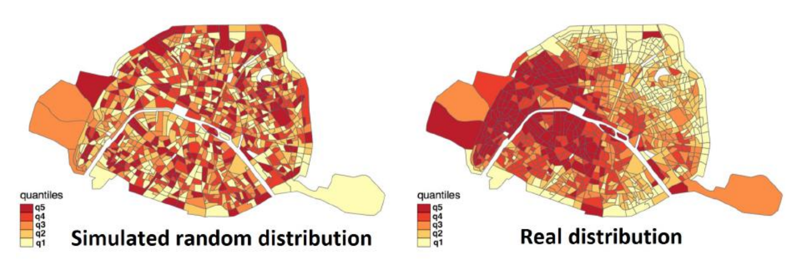
Figure 2.15 : Illustration, on Parisian census districts (IRIS), of the gap between random distribution and spatially autocorrelated distribution - Source: INSEE, Localised Tax Revenues System (RFL) 2010
Very generally speaking, spatial autocorrelation indices are used to characterise the correlation between measures that are geographically similar to a measured phenomenon. If \(WY\) is the vector of means of variable \(Y\) (where \(W\) is the spatial weights matrix) in the neighbourhood of each spatial unit, spatial autocorrelation indices occur as:
Based on this very general formulation, for quantitative variables, a main indice is used to test for spatial autocorrelation — the Moran index. The Moran index considers the variances and covariances taking into account the difference between each observation and the average of all observations.
— \(H_0\): The neighbours do not co-vary in any particular way.
— \(I_W > 0\) => positive spatial autocorrelation
As spatial autocorrelation is measured based on a comparison of the value of an individual variable with that of its neighbours, the definition of the neighbourhood will have a significant impact on the measurement of spatial autocorrelation. The larger the planned neighbourhood, the greater the number of neighbours considered, and the greater the probability that their average will be closer to the population’s average, which may lead to a relatively low value for spatial autocorrelation.
Application in R
The spdep package is used to calculate spatial autocorrelation indices and their significance using function moran.test.
By default, the distribution of the variable of interest under the null hypothesis is derived by randomisation. The randomisation = FALSE argument makes it possible to assume that this is a normal distribution.
If certain entities do not have neighbours
order for the package functions spdep to accept spatial weight matrices in which certain units do not have neighbours, it is necessary to specify the option: zero.policy=TRUE. By default, the size of the matrix is reduced to exclude observations without neighbours. The opposite can be specified with the option: adjust.n=FALSE. In this case, the absolute value of the test statistic increases, and the absolute value of its expected maturity and variance decreases (Bivand et al. 2013a).
Two approaches are used to estimate the significance of these indices — an analytical solution based on the normality hypothesis and a Monte Carlo solution based on the randomisation hypothesis. The analytical solution, used by the moran.test function, is based on the assumption that the test statistic asymptotically follows a normal distribution with mean 0 and variance 1. This is not always the most accurate measure of significance as convergence towards this distribution may depend on the arrangement of the polygons. Instead, the moran.mc function can be used, allowing to choose the number of permutations to calculate the simulated distribution of Moran’s I. Comparing the significance levels calculated from functions moran.mc and moran.test makes it possible to ensure the robustness of the conclusions.
Monte Carlo approach to estimating significance
In a Monte Carlo test (a permutation bootstrap test), the attribute values are randomly assigned to polygons in the data set and, for each permutation of the attribute values, a Moran’s I value is computed. The output is a sampling distribution of Moran’s I values under the (null) hypothesis that attribute values are randomly distributed across the study area. We then compare our observed Moran’s I value to this sampling distribution.
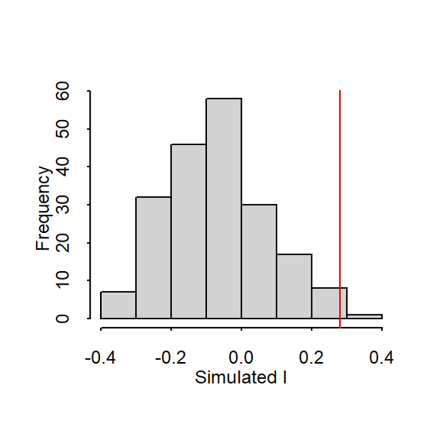
For example, the Mantel test is using the Monte Carlo method.
Let’s explore the Moran Global Index in the mares dataset :
#Spatial series analysis : dataset mares#Moran Global Index#For a REGULAR configuration of points# 3 - The Moran Global Index ==================================# Let's test the global spatial autocorrelation for carbonates and each criterion using the Moran test (possible because the carbonate is a quantitative variable)moran.test(mare$Carbonate, pondmaregab.bin, zero.policy=TRUE)
Moran I test under randomisation
data: mare$Carbonate
weights: pondmaregab.bin n reduced by no-neighbour observations
Moran I statistic standard deviate = 1.4378, p-value = 0.07524
alternative hypothesis: greater
sample estimates:
Moran I statistic Expectation Variance
0.15443932 -0.03703704 0.01773410
Moran I test under randomisation
data: mare$Carbonate
weights: pondmaretri.bin
Moran I statistic standard deviate = 1.8498, p-value = 0.03217
alternative hypothesis: greater
sample estimates:
Moran I statistic Expectation Variance
0.145853163 -0.033333333 0.009383014
Moran I test under randomisation
data: mare$Carbonate
weights: pondmarednear.bin n reduced by no-neighbour observations
Moran I statistic standard deviate = 1.4158, p-value = 0.07842
alternative hypothesis: greater
sample estimates:
Moran I statistic Expectation Variance
0.16716343 -0.03571429 0.02053503
#No significant autocorrelation for all tests:#Only for the 2nd one (triangulation). For carbonate, we have something significant - for Gabriel and distance, not significant.#Rather, large-scale processes determine the distribution of carbonate concentration.
# We could also look at spatial autocorrelation with other variables to see if we reach the same conclusionmoran.test(mare$Nitrate, pondmaregab.bin, zero.policy=TRUE)
Moran I test under randomisation
data: mare$Nitrate
weights: pondmaregab.bin n reduced by no-neighbour observations
Moran I statistic standard deviate = 0.49064, p-value = 0.3118
alternative hypothesis: greater
sample estimates:
Moran I statistic Expectation Variance
0.02036859 -0.03703704 0.01368928
Moran I test under randomisation
data: mare$Nitrate
weights: pondmaretri.bin
Moran I statistic standard deviate = 1.2281, p-value = 0.1097
alternative hypothesis: greater
sample estimates:
Moran I statistic Expectation Variance
0.07342432 -0.03333333 0.00755716
Moran I test under randomisation
data: mare$Nitrate
weights: pondmarednear.bin n reduced by no-neighbour observations
Moran I statistic standard deviate = 1.0102, p-value = 0.1562
alternative hypothesis: greater
sample estimates:
Moran I statistic Expectation Variance
0.09328084 -0.03571429 0.01630642
#--> No spatial structure with the 3 criteria
Spatial autocorrelation in multivariate data
#Spatial series analysis : dataset mares#The Mantel test (using the Monte Carlo method)#For a REGULAR configuration of points############SPATIAL AUTOCORRELATION IN MULTIVARIATE DATA###############The Mantel test (using the Monte Carlo method)#In case of multivariate data it can be useful to have a test that sum up the spatial autocorrelation for all characteristics/variables#In that case, we need to test the correlation between a matrix of geographical distance and a matrix of distance of the characteristics between objects #To compute a geographical distance matrix you can use the function dist that #compute an euclidian distancegeo =dist(marexy)#To compute the matrix of distance of the characteristics between objects, #we can have our own measure (genetic distance, similarity etc...) # or compute an euclidean distance between the object # it is usually advice to scale the data if they are not measure on the same scale (ie to divide by the standard#deviation)chim =dist(scale(mare[,1:10]),method ="euclidian")# the test used to correlate those two matrix is a Mantel test, it uses randomization of the values #to have the expected distribution under H0# H0: the correlation between teh two matrix is null : there is no spatial autocorrelationr1 =mantel.rtest(geo,chim,nrepet=1000)#nrepet = to specify the number of permutations# or r1 = mantel.randtest(geo,chim,nrepet=1000)r1
Monte-Carlo test
Call: mantel.rtest(m1 = geo, m2 = chim, nrepet = 1000)
Observation: 0.2437815
Based on 1000 replicates
Simulated p-value: 0.006993007
Alternative hypothesis: greater
Std.Obs Expectation Variance
2.908960278 -0.001557550 0.007113084
plot(r1, main ="Mantel's test")
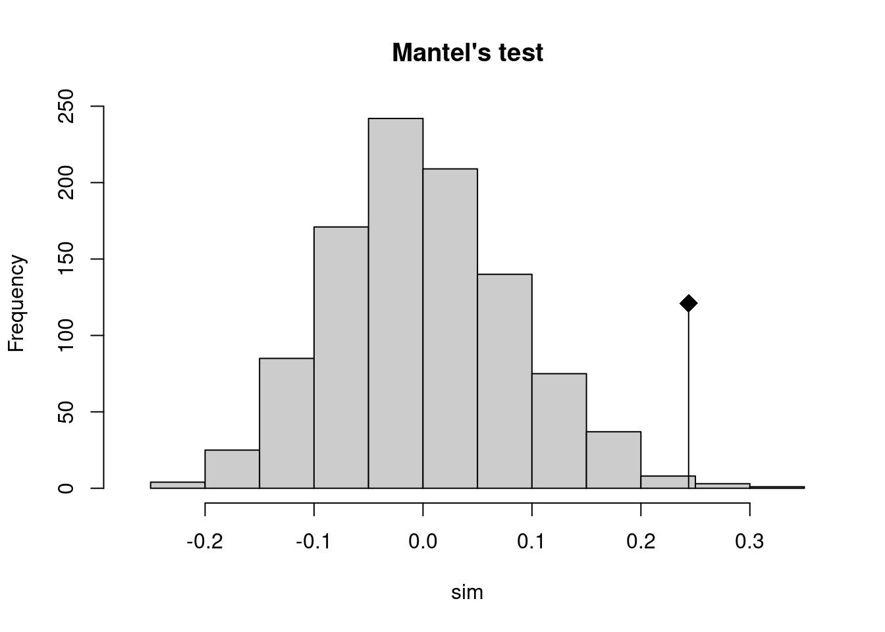
#Significant#Indicator far from what is expected if permutations are involved#Ponds that are close will look alike#Spatial dependence
2.1.2 Spatial autocorrelation of categorical variables
When the variable of interest is not continuous but categorical, the degree of local association is measured by analysing the statistics of the join count (Zhukov 2010). To illustrate the calculation of these statistics, we consider a binary variable representing two colours, White (B) and Black (N) so that a relation can be called White-White, Black-Black or White-Black. It can be seen that:
— positive spatial autocorrelation occurs if the number of White-Black relations is significantly lower than what would have occurred with random spatial distribution;
— negative spatial autocorrelation occurs if the number of White-Black relations is significantly greater than what would have occurred with random spatial distribution;
— no positive spatial autocorrelation occurs if the number of White-Black links is approximately identical to what would have occurred with random spatial distribution;
2.2 Local measures of spatial autocorrelation
Global statistics are based on the assumption of a spatial stationary process: spatial autocorrelation would be the same throughout space. However, this assumption is all the less realistic as the number of observations is high.
2.2.1 Local spatial autocorrelation indicators
Anselin (Anselin 1995) defines local spatial autocorrelation indicators. These must measure the intensity and significance of local autocorrelation between the value of a variable in a spatial unit and the value of the same variable in the surrounding spatial units. More specifically, these indicators make it possible to:
— detect significant groupings of identical values around a particular location (clusters);
— identify spatial non-stationarity zones, which do not follow the global process.
To be considered as local spatial association measures – (LISA; Local Indicators of Spatial Association) – as defined by Anselin, these indicators must verify the following two properties:
— for each observation, they indicate the intensity of the grouping of similar – or opposite in trend – values around this observation;
— the sum of local indices on all observations is proportional to the corresponding global index. One of the most used LISA is the local Moran’s I.
\(Ii > 0\) indicates a grouping of similar values (higher or lower than average).
\(Ii < 0\) indicates a combination of dissimilar values (e.g. high values surrounded by low values).
Here is an example with the median income in the different Parisian districts :
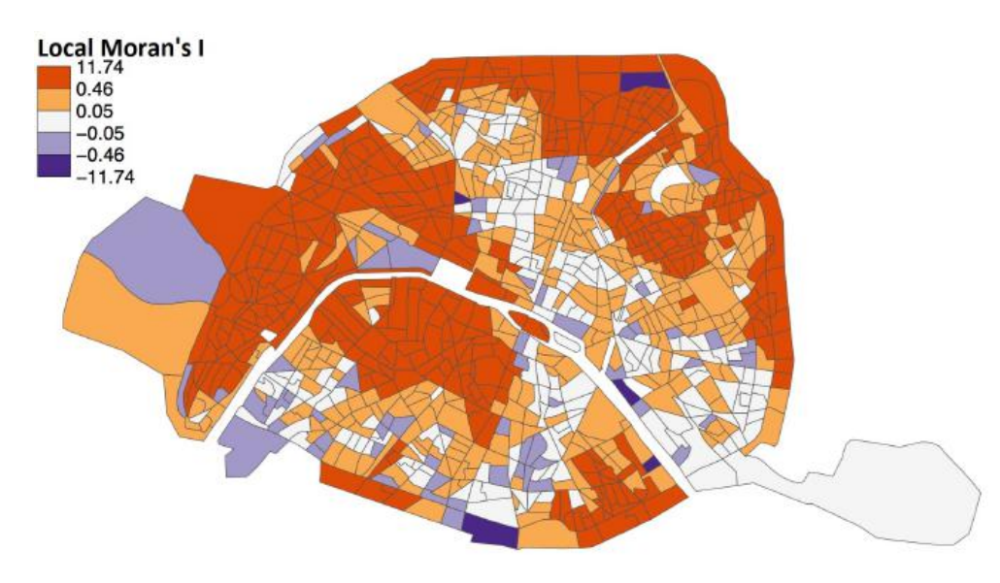
Figure 2.17 : Values of local Moran’s I, on Parisian IRIS - Source: INSEE, Localised Tax Revenues System (RFL) 2010
2.2.2 Significance of the local Moran’s I
Significant LISAs are combinations of similar or dissimilar values more marked than what might have been observed based on random spatial distribution. The significance test of each local association indicator is based on a statistic assumed to asymptotically follow a normal distribution under the null hypothesis. If the assumption of normality holds, \(z(I_i) = \frac{I−E(I_i)}{\sqrt{Var(I_i)}}∼ N (0,1)\).
To test the validity of the normality assumption of the LISAs under the null hypothesis, several random distributions are simulated in the space of the variable of interest and the local indicators associated with these simulations are calculated.
Several adjustments methods can then be used : “bonferroni”, “holm”, etc.
2.2.3 Interpretation of local indices
In the absence of global spatial autocorrelation
The LISAs make it possible to identify areas where similar values are significantly grouped. These are areas where the local spatial structure is such that the relations between neighbours are particularly strong.
In the presence of global spatial autocorrelation
LISAs indicate areas that have a particular impact on the global process (local autocorrelation more pronounced than global autocorrelation), or, on the contrary, which stand out from it (lower autocorrelation).
Application with R
Let’s investigate this in the div35 dataset :
#Spatial series analysis : dataset div35#Local Moran Index#For a REGULAR configuration of points# 2 - The Local Moran Index ----# Due to the large extend of the dataset (scale of Brittany), we might expect non stationary issue#We will investigate this via the Local Moran Index. The autocorrelaton is computed for each point taking into account their neighbours.# Let's start with plant diversity:# For the PLANTSlocalI.pp1=spdep::localmoran(div35[,1], pond4.bin)localI.pp1
#Instead of 1 index, there are 68.#For plants: 6 points where we have a significant index# the five columns correspond respectively to:# first column without header: the atlas square number (point i)# Ii: the Moran index at point i# E.Ii: the expected value of the Moran index at point i under H0# Var.Ii: the variance of the index# ZIi the variable of the test# Pr(Z>0) p value of the test adjusted with bonferonni correction# We can isolate the significant points like this:localI.pp1[localI.pp1[,5]<0.05,]
#We can also represent the Local Index value using this code lines:# par(mfrow=c(2,1))# s.value(xy,localI.pp1[,1], ylim=c(min(div35[,4])-10000,max(div35[,4])+10000), xlim=c(min(div35[,3])-10000,max(div35[,3])+10000), sub="local I (plant)")# s.value(xy,localI.oi1[,1], ylim=c(min(div35[,4])-10000,max(div35[,4])+10000), xlim=c(min(div35[,3])-10000,max(div35[,3])+10000), sub="local I (bird)")#Clusters of values that look alike and outliers (values that don't look alike)#Sometimes close values are similar, sometimes not
2.3 Spatio-temporal indices
It is not unusual for a geolocalised database to have observations raised at different points in time. It may be interesting to understand how a localised phenomenon has spread and evolved in space and time and how it can be linked to the conditions of the environment surrounding it. In this case, it is important to be able to assess how the underlying spatial structures change over different periods of time. On spatiotemporal data, prior graphical exploration of cross-section data (standard Moran’s I) can be used to study the existence and change in grouping or dispersion trends that are statistically significantly different from random models. Many recent developments show a growing interest in analysing spatio-temporal data in many areas of research such as physics, meteorology, economics and environmental studies. By extending the Moran index to include time attributes, it becomes possible to calculate global and localized indices that concurrently take into account spatial and temporal auto-correlations. This can also be done on the basis of spatial-temporal risk weighting matrices.
3 - Spatial modeling
Once the structure of the spatial correlation has be estimated, it can then be included in the model.
Depending on the structure of the autocorrelation and especially if the process is or is not stationary,and of the structure of the residuals, the analysis required will be different and more or less difficult.
For the analysis under R, it will be important to import the package spatialreg, spdep as well as gwrr
library(spatialreg)library(spdep)library(gwrr)
3.1.Stationary process
For the models described here, it is required for the processes to be stationary, meaning that the process is constant across regions. Another assumption is that the spatial autocorrelation is isotropic. This means that the cause of the autocorrelation act the same way in every direction. Anisotropy may be caused for example by environmental factors like the wind or water currents.
All the models showed here will be based on the general linear model modified to take the spatial autocorrelation into account :
Y = X\(\beta\) + \(\epsilon\)
3.1.1. Spatially lagged X model
Theory
This analysis best perform on local analysis. If the scale is to big, it may be wiser to use another analysis as this one will lack precision.
The idea behind this analysis is that the state of a neighbor region will affect our region.
This model estimate how well the response variable at one site reflect the response values at its surrounding sites.
An extra parameter : WX\(\theta\), called the autocovariate is added to the general linear model’s formula. It is a distance-weighted function of the neighboring response value.
Y = X\(\beta\) + WX\(\theta\) + \(\epsilon\)
The argument WX\(\theta\) is the average of the neighboring Xs.
Application in R
(For the purpose of the example, we will assume that the analysis is the right one even though other would be more fitted)
As this analysis is quite simple the average value of the neighboring regions can be calculated by hand and then added to the general linear formula.
However, there are commands in R in the package sdpep that allows to do the same analysis ans to go a little further, as well as giving the R-squared value and the p value.
Our exemple here will be the study of plants and bird richness in Ile & Vilaine.
(The dataset “div35” set can be found in the doc called “Spatial autocorrelation_ modelisation”)
(To see how to create weighted matrix, see the previous parts)
div35 <-read.table("div35.txt", header=T, dec=",")xy=div35[,3:4] #Extract the coordinates x and y of each pointsplot(div35[,3:4])#For a rook connectiondiv.knear4<-knearneigh(as.matrix(xy),4) #extract the neighbour pointsknn2nb(div.knear4) # convert the object of type knn into a type nb # transformation to get as many lists than points/observation
Neighbour list object:
Number of regions: 68
Number of nonzero links: 272
Percentage nonzero weights: 5.882353
Average number of links: 4
Non-symmetric neighbours list
plot(knn2nb(div.knear4), xy, add=TRUE)#For a Queen conectiondiv.knear8<-knearneigh(as.matrix(xy),8)knn2nb(div.knear8)
Neighbour list object:
Number of regions: 68
Number of nonzero links: 544
Percentage nonzero weights: 11.76471
Average number of links: 8
Non-symmetric neighbours list
plot(knn2nb(div.knear8), xy, add=TRUE)
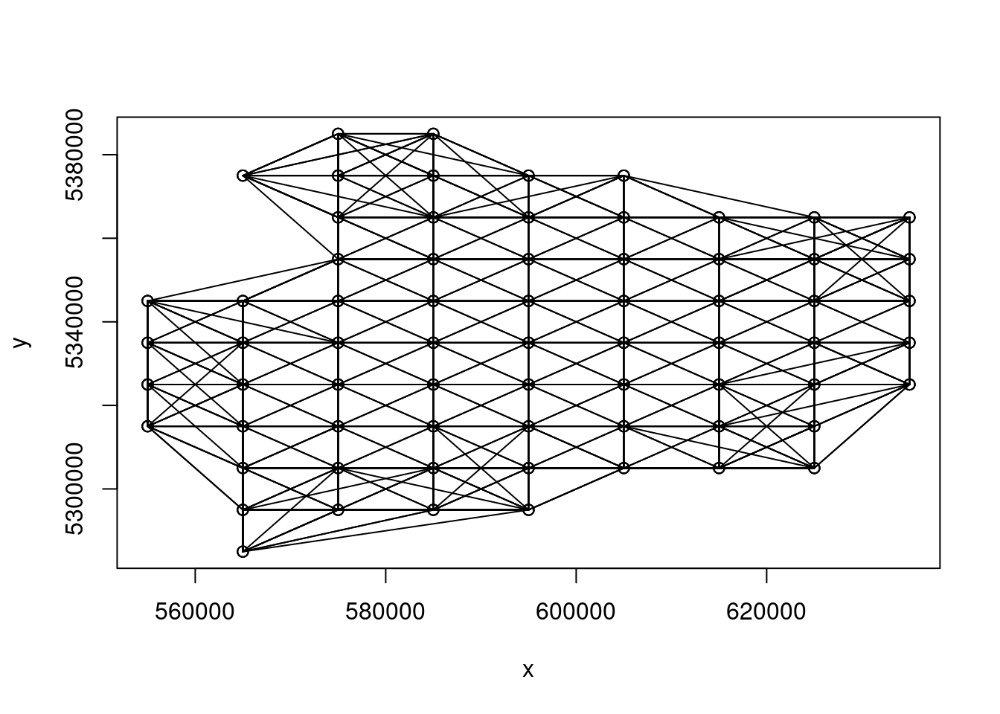
#Spatial weighted matrixpond4.stan<-nb2listw(knn2nb(div.knear4), style="W", zero.policy=TRUE)pond8.stan<-nb2listw(knn2nb(div.knear8), style="W", zero.policy=TRUE)#The argument "style = "w"" allows to determine the weight given to each link. # "W" for standardized = 1/nb of connections#if you want to give the same weight to each link, then use the argument "B" instead of "w".
(to be able to use the weighted matrix in the analysis, the items must be a class “listw”, hence the argument “nb2listw”)
The function used for spatially weighted matrix is “lmslx”. In the argument :
First the equation tested in shape of : Y ~ X1+X2+X3 …
Call:
lm(formula = formula(paste("y ~ ", paste(colnames(x)[-1], collapse = "+"))),
data = as.data.frame(x), weights = weights)
Residuals:
Min 1Q Median 3Q Max
-15.8936 -1.6548 0.5529 2.1413 6.5077
Coefficients:
Estimate Std. Error t value Pr(>|t|)
(Intercept) -7.4084 10.8417 -0.683 0.4968
rich_pp 0.4686 0.1856 2.525 0.0140 *
lag.rich_pp 1.1986 0.4717 2.541 0.0135 *
---
Signif. codes: 0 '***' 0.001 '**' 0.01 '*' 0.05 '.' 0.1 ' ' 1
Residual standard error: 4.02 on 65 degrees of freedom
Multiple R-squared: 0.2395, Adjusted R-squared: 0.2161
F-statistic: 10.23 on 2 and 65 DF, p-value: 0.000137
Here, 2 coefficients are given as well as their p-value. The first one (rich_pp) correspond to the argument X\(\beta\) of our original function. The second one (lag.rich_pp) correspond to WX\(\theta\).
Here there is only one X, and therefore only 2 coefficients, but with a bigger model to test, the coefficients corresponding to the X will be named just like the original Xs, and the coefficients for the autocorrelation will be named “lag.X”.
As always, we only keep the coefficients that have a significant p-value. Here they all do. Our final model here would be :
An interpretation of those results here is that the more plants there is in a place, the more bird will be present as well. As for the lag value, we can expect that the more plants there will in the neighboring regions, the more birds there will in our region.
This model works at small scale only
The first estimate, that regards the response variable is called the direct effect, wherease the factor impacting the autocorrelation is called the indirect factor. However we can have an idea of the general effect on the whole region by combining the two effects int the total effect.
impacts(lmsSLX)
Impact measures (SlX, glht):
Direct Indirect Total
rich_pp 0.4685765 1.198607 1.667184
summary(impacts(lmsSLX, R=500),zstats=TRUE)
Impact measures (SlX, glht, n-k):
Direct Indirect Total
rich_pp 0.4685765 1.198607 1.667184
========================================================
Standard errors:
Direct Indirect Total
rich_pp 0.1856093 0.4717312 0.4377709
========================================================
Z-values:
Direct Indirect Total
rich_pp 2.524532 2.540869 3.808348
p-values:
Direct Indirect Total
rich_pp 0.011585 0.011058 0.0001399
The function impact only gives the total effect as the sum of the direct and indirect effect. Putting the function into a summary allows to show standard error, and the p-values. The total effect represent the overall impact of the variable when applied to the whole map.
Sometimes, non-significant direct and indirect effect may become significant when looking at the total effect
3.1.2. - Simultaneous autoregressive models (SAR)
To be able to study an autocorrelation at a larger scale, other models must be used.
The SAR model is an autoregressive model.These models take spatial autocorrelation into account by using a neighborhood matrix specifying the relationship between the residuals at each location.
The SAR model allows to study directional processes, which, in ecology, are quite common ( ex : wind dispersal or stream flows). The null hypothesis for the general SAR model is that the Ys are mutually independent.
The autoregressif process can be found in either the residuals of the data or in the response value. Depending on where this process is thought to be,three models are available :
The Error model
The Lag model
The Mix model
A specific diagnostic can be made to chose between either one.
3.1.2.1. Lagrange Multiplier diagnostic
Theory
The idea for this test is to statistically check which of the SAR model would best fit to our equation.
The Lagrange multiplier diagnostic tests the fit of the model under the null hypothesis and looks for evidence of departures in the direction of interest. In summary, it will examine the residuals of a model and look for specific types of non-randomness.
Application in R
The command lm.LMtests() allows to get the lagrange multiplier for a set model.
test = the type of test that will be made (here, “all” means that the fives tests will be conducted : LMerr, LMlag, RLMerr, RLMlag, SARMA)
The firsts p-values to look at are for the normal tests. The significant one will be the analysis conducted later. If non of them are significant, we look at the robust tests.
3.1.2.2. Lag models
Theory
In this model, we assume that the autoregressif process is in the response variable. As this model is general, this means that anything affecting our Y, will also affect its neighbor in some way, affecting us in return. This creates a feedback effect.
It would for exemple be liked a stone thrown in a lake. This creates waves that propagate to the whole lake.
The lag model is used to take into account a autoregressif process only occuring in the response variable. Therefore, the responsable variable argument in the model will include a term for the spatial autocorrelation : ρW
The model will take the form of :
Y =\(\rho\)Wx +X\(\beta\) + \(\epsilon\)
ρ is the autoregression parameter W is the spatial weights matrix
Using the values obtained here, the final model would be:
\(Bird\:Richness = 0.37\:WX +0.53\:X + \epsilon\)
3.1.2.3. Error models
Theory
When using the error model, we assume that the autoregressif process is only in the residuals.
When dealing with such model, an interpretation may be that some spatially correlated variable are missing in the dataset.
this model takes the form of :
Y = X\(\beta\) + \(\lambda\)WY + \(\epsilon\)
The term \(\lambda\)W represent the spatial structure with \(\lambda\) being the spatial autoregression coefiscient. \(\gamma\) is the spatially dependant error term.
Application in R
errorsarlm(rich_ois~rich_pp, data = div35, pond8.stan)
Using the values obtained here, the final model would be:
\(Bird\:Richness =0.52\:X + 0.33\:WY + \epsilon\)
3.1.2.4. Mixed models
Theory
If the spatial autocorrelation affect both the response variable and the residuals, the mix model is used. This model include all the parameter added above, and it is the most inclusive model.
It can be noted that this model can also be used in both situation described previously, as the coefficient will cancel themselves out if either one is not present.
Y =\(\rho\)WX +X\(\beta\) + \(\lambda\)WY + \(\epsilon\)
Call:spatialreg::sacsarlm(formula = rich_ois ~ rich_pp, data = div35,
listw = pond8.stan)
Residuals:
Min 1Q Median 3Q Max
-15.48701 -1.58517 0.52216 2.42819 6.27633
Type: sac
Coefficients: (asymptotic standard errors)
Estimate Std. Error z value Pr(>|z|)
(Intercept) -1.07853 6.34383 -0.1700 0.8650009
rich_pp 0.53751 0.16269 3.3038 0.0009539
Rho: 0.63823
Asymptotic standard error: 0.20901
z-value: 3.0535, p-value: 0.0022618
Lambda: -0.65643
Asymptotic standard error: 0.50258
z-value: -1.3061, p-value: 0.19151
LR test value: 4.7419, p-value: 0.093391
Log likelihood: -190.4117 for sac model
ML residual variance (sigma squared): 14.311, (sigma: 3.783)
Number of observations: 68
Number of parameters estimated: 5
AIC: NA (not available for weighted model), (AIC for lm: 391.57)
From here, we can replace in the formula :
\(Bird\:Richness = 0.64WX + 0.53X - 0.65\)
For exemple purpose, the lambda was implemented in the model. However it was not necessary here as the associated value was not significant
Even though three commands are available for each type of SAR model, it is best to only use the mixed model function sacsarlm, as the other ones don’t provide p-values, and this one provides more information than the others.
(If the image doesn’t load, it is available in the Spatial autocorrelation_ modelisation doc)
3.2. - Non stationary process
Graphically weighted models (GWM)
Theory
In ecology, a lot of processes are non stationary. This model is one of the few that allow to deal with non-stationarity. It is a local modeling.
The \(\beta\) here now correspond to the coefficient at the location i.
It applies a geographical weight to the data used in each model, meaning that the further away a point will be from the regression point, the less weight they will have. This model require the use of a function called the Kernel function. It consists in an equation giving the weights \(w_ij\) relating the focal point \(i\) to each observation \(j\). This means it places a “window” over the observation.
To define the “window” or bandwidth, a local regression is made with a set bandwidth and then used to predict the values of the dependant variables. The residuals obtained are compared to other residuals from other regressions made with different bandwidth and the smallest local residuals are kept.
Once the bandwidth is defined, the regression is made for each points and the result can be mapped.
Application in R
The function gwr.est will define the optimal bandwidth.
#The value for each parameters are obtained by directly fetching the parameters from the list :lmgwrD$phi #gives the bandwidth
[1] 12449.71
lmgwrD$RMSPE #gives the root-square of the bandwidth
[1] 3.914431
Phi: kernel bandwidth
RMSPE: root square of error of the prediction based on bandwidth estimated
Beta: matrix with the coefficients for each point (intercept line [1,] and regression coefficient line [2,])
Yhat: model estimate
RMSE: root square of error estimation
Rsquare: model fitting
plot(xy)s.value(xy,lmgwrD$beta[2,],add.plot=T)
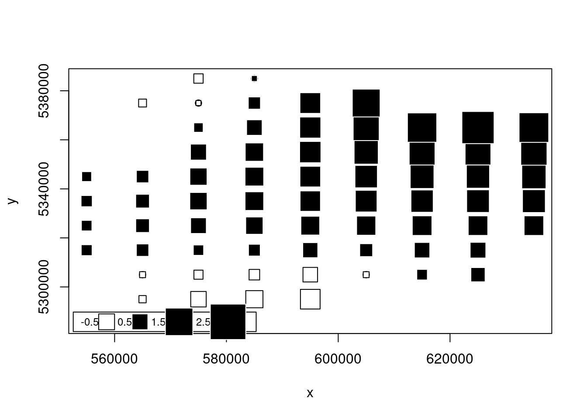
The result can finally be plotted for each point.
References
F. Dormann, Carsten, Jana M. McPherson, Miguel B. Araújo, Roger Bivand, Janine Bolliger, Gudrun Carl, Richard G. Davies, et al. « Methods to Account for Spatial Autocorrelation in the Analysis of Species Distributional Data: A Review ». Ecography 30, nᵒ 5 (2007): 609‑28. https://doi.org/10.1111/j.2007.0906-7590.05171.x.
Smith, P. A. (1994). Autocorrelation in Logistic Regression Modelling of Species’ Distributions. Global Ecology and Biogeography Letters, 4(2), 47–. doi:10.2307/2997753
Getis, Arthur. «Spatial Autocorrelation». In Handbook of Applied Spatial Analysis: Software Tools, Methods and Applications, édité par Manfred M. Fischer et Arthur Getis, 255‑78. Berlin, Heidelberg: Springer, 2010. https://doi.org/10.1007/978-3-642-03647-7_14.
https://www.youtube.com/watch?v =b3HtV2Mhmvk
Engle, Robert F. « A general approach to lagrange multiplier model diagnostics ». Journal of Econometrics 20, nᵒ 1 (1 octobre 1982): 83‑104. https://doi.org/10.1016/0304-4076(82)90104-X.
Class and powerpoint made by Mrs. Le Gouar Pascaline
Páez, A., et D. C. Wheeler. « Geographically Weighted Regression ». In International Encyclopedia of Human Geography, édité par Rob Kitchin et Nigel Thrift, 407‑14. Oxford: Elsevier, 2009. https://doi.org/10.1016/B978-008044910-4.00447-8.
https://gdsl-ul.github.io/san/09-gwr.html
Anselin, Luc (2013). Spatial econometrics: methods and models. Vol. 4. Springer Science & Business Media.
Anselin, Luc and Daniel A Griffith (1988). « Do spatial effects really matter in regression analysis? » Papers in Regional Science 65.1, pp. 11–34.
Bivand, Roger S, Edzer Pebesma, and Virgilio Gomez-Rubio (2013b). « Spatial Neighbors ». Applied Spatial Data Analysis with R. Springer, pp. 83–125.
Toussaint (2014). « The sphere of influence graph: Theory and applications ». International Journal of Information Thechnology and Computer Science 14.2.
Smith, Tony E. (2016). Notebook on Spatial Data Analysis. http://www.seas.upenn.edu/ ese502/notebo
Tiefelsdorf, Michael (1998). « Modelling spatial processes: The identification and analysis of spatial relationships in regression residuals by means of Moran’s I (Germany) ». PhD thesis. Université Wilfrid Laurier.